Spark#
SparkOverview#
--- Problems with MapReduce
- Batch Processing
- Complexity
- Data Movement
- Fault Tolerance
- No Support for Interactive Processing
- Not Optimal for Small Files
--- Features of Spark
- Speed
- Powerful Caching
- Deployment
- Real-Time Processing
- Polyglot
- Scalability
--- Spark Architecture
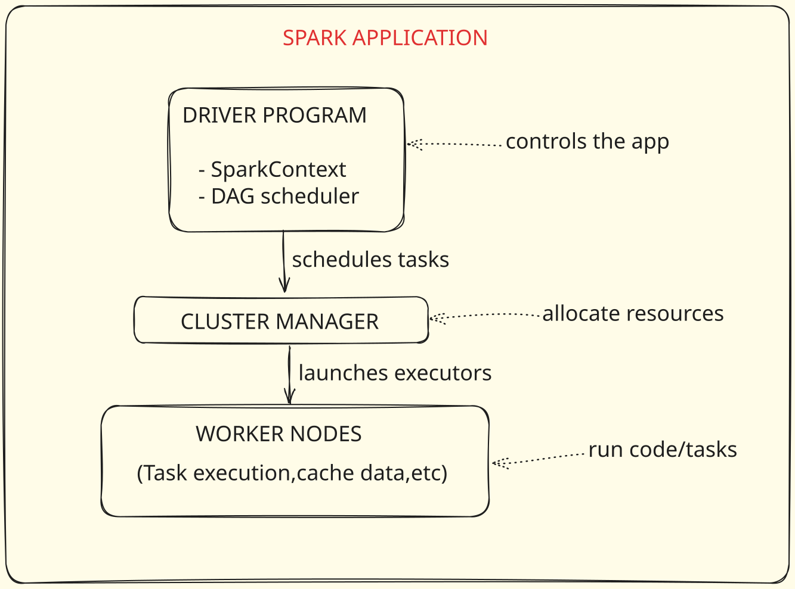
-
Driver Program: The driver program is the heart of a Spark application. It runs the main() function of an application and is the place where the SparkContext is created. SparkContext is responsible for coordinating and monitoring the execution of tasks. The driver program defines datasets and applies operations (transformations & actions) on them.
-
SparkContext: The SparkContext is the main entry point for Spark functionality. It represents the connection to a Spark cluster and can be used to create RDDs, accumulators, and broadcast variables on that cluster.
-
Cluster Manager: SparkContext connects to the cluster manager, which is responsible for the allocation of resources (CPU, memory, etc.) in the cluster. The cluster manager can be Spark's standalone manager, Hadoop YARN, Mesos, or Kubernetes.
-
Executors: Executors are worker nodes' processes in charge of running individual tasks in a given Spark job. They run concurrently across different nodes. Executors have two roles. Firstly, they run tasks that the driver sends. Secondly, they provide in-memory storage for RDDs.
-
Tasks: Tasks are the smallest unit of work in Spark. They are transformations applied to partitions. Each task works on a separate partition and is executed in a separate thread in executors.
-
RDD: Resilient Distributed Datasets (RDD) are the fundamental data structures of Spark. They are an immutable distributed collection of objects, which can be processed in parallel. RDDs can be stored in memory between queries without the necessity for serialization.
-
DAG (Directed Acyclic Graph): Spark represents a series of transformations on data as a DAG, which helps it optimize the execution plan. DAG enables pipelining of operations and provides a clear plan for task scheduling. Spark Architecture & Its components
-
DAG Scheduler: The Directed Acyclic Graph (DAG) Scheduler is responsible for dividing operator graphs into stages and sending tasks to the Task Scheduler. It translates the data transformations from the logical plan (which represents a sequence of transformations) into a physical execution plan. It optimizes the plan by rearranging and combining operations where possible, groups them into stages, and then submits the stages to the Task Scheduler.
-
Task Scheduler: The Task Scheduler launches tasks via cluster manager. Tasks are the smallest unit of work in Spark, sent by the DAG Scheduler to the Task Scheduler. The Task Scheduler then launches the tasks on executor JVMs. Tasks for each stage are launched in as many parallel operations as there are partitions for the dataset.
-
Master: The Master is the base of a Spark Standalone cluster (specific to Spark's standalone mode, not applicable if Spark is running on YARN or Mesos). It's the central point and entry point of the Spark cluster. It is responsible for managing and distributing tasks to the workers. The Master communicates with each of the workers periodically to check if it is still alive and if it has completed tasks.
-
Worker: The Worker is a node in the Spark Standalone cluster (specific to Spark's standalone mode). It receives tasks from the Master and executes them. Each worker has multiple executor JVMs running on it. It communicates with the Master and Executors to facilitate task execution.The worker is responsible for managing resources and providing an execution environment for the executor JVMs.
--- What happens behind the scenes
- You launch the application.
- Spark creates a SparkContext in the Driver.
- Spark connects to the Cluster Manager (e.g., YARN, standalone, k8s).
- Cluster Manager allocates Workers and starts Executors.
- RDD transformations are converted into a DAG (Directed Acyclic Graph.
- Spark creates Stages, breaks them into Tasks (based on partitions).
- Tasks are shipped to Executors.
- Executors run the tasks and return results back to the Driver.
- Final results (e.g., word count) are written to HDFS.
--- Spark Standalone
Spark Standalone mode is a built-in cluster manager in Apache Spark that enables you to set up a dedicated Spark cluster without needing external resource managers like Hadoop YARN or Kubernetes.
It is easy to deploy, suitable for development and testing, and supports distributed data processing across multiple nodes.
Advantages:
- Easy to set up and manage
- No need for external resource managers
- Built-in web UI for monitoring
- Supports HA (High Availability) with ZooKeeper
Limitations:
- Less fault-tolerant than YARN or Kubernetes
- Limited support for resource isolation and fairness
- Not recommended for large-scale production
--- Spark with YARN
Apache Spark on YARN means running Spark applications on top of Hadoop YARN (Yet Another Resource Negotiator) - the resource manager in Hadoop ecosystems. This setup allows Spark to share cluster resources with other big data tools (like Hive, HBase, MapReduce) in a multi-tenant environment.
YARN handles resource management, job scheduling, and container allocation, while Spark focuses on data processing.
-
Resource Manager: It controls the allocation of system resources on all applications. A Scheduler and an Application Master are included. Applications receive resources from the Scheduler.
-
Node Manager: Each job or application needs one or more containers, and the Node Manager monitors these containers and their usage. Node Manager consists of an Application Master and Container. The Node Manager monitors the containers and resource usage, and this is reported to the Resource Manager.
-
Application Master: The ApplicationMaster (AM) is an instance of a framework-specific library and serves as the orchestrating process for an individual application in a distributed environment.
Advantages:
- Leverages existing Hadoop cluster (no separate setup)
- Resource sharing across Hadoop ecosystem
- Supports HDFS, Hive, HBase integration natively
- Production-grade scalability and stability
Considerations:
- Slight overhead from YARN’s container management
- Configuration tuning (memory, executor placement) is important
- YARN needs to be properly secured (Kerberos, ACLs)
Data Type & Schema#
flight_df = spark.read.format("csv") \
.option("header", "false") \
.option("inferschema","false")\
.option("mode","FAILFAST")\
.load("flightdata.csv")
--- Read modes in spark
| Mode | Description |
|---|---|
| failFast | Terminates the query immediately if any malformed record is encountered. This is useful when data integrity is critical. |
| dropMalformed | Drops all rows containing malformed records. This can be useful when you prefer to skip bad data instead of failing the entire job. |
| permissive (default) | Tries to parse all records. If a record is corrupted or missing fields, Spark sets null values for corrupted fields and puts malformed data into a special column named _corrupt_record. |
There are two primary methods: using StructType and StructField classes, and using a DDL (Data Definition Language) string.
These are classes in Spark used to define the schema structure.
StructField represents a single column within a DataFrame. It holds information such as the column's name, its data type (e.g., String, Integer, Timestamp), and whether it can contain null values (nullable: True/False). If nullable is set to False, the column cannot contain NULL values, and an error will be thrown if it does.
StructType defines the overall structure of a DataFrame. It is essentially a list or collection of StructField objects.
Tip
What happens if you set header=False when your data actually has a header? If you disable the header option (header=False) but your CSV file contains a header row, Spark will treat that header row as regular data. If this header row's values do not match the data types defined in your manual schema (e.g., a string "Count" being read into an Integer column), it can lead to null values in that column if the read mode is set to permissive, or an error if the mode is failfast
--- Handling corrupted records
When reading data, Spark offers different modes to handle corrupted records, which influence how the DataFrame is populated.
In permissive mode, all records are allowed to enter the DataFrame. If a record is corrupted, Spark sets the malformed values to null and does not throw an error. For the example data with five total records (two corrupted), permissive mode will result in five records in the DataFrame, with nulls where data is bad.
In dropMalformed mode, Spark discards any record it identifies as corrupted.
In failfast mode, Spark immediately throws an error and stops the job as soon as it encounters the first corrupted record. This mode will result in zero records in the DataFrame because the job will fail.
--- Print bad records
To specifically identify and view the corrupted records, you need to define a manual schema that includes a special column named _corrupt_record. This column will capture the raw content of the corrupted record.
Where to store bad record For scenarios with a large volume of corrupted records (e.g., thousands), printing them is not practical. Spark provides the badRecordsPath option to store all corrupted records in a specified location. These records are saved in JSON format at the designated path.
--- Modes in DataFrame Writer API
When working with Spark, after you have read data into a DataFrame and performed transformations, it is crucial to write the processed data back to disk to ensure its persistence. Currently, all the transformations and data processing occur in memory, so writing to disk makes the data permanent.
A typical flow looks like: df.write.format(...).option(...).mode(...).save(path).
The mode() method in the DataFrame Writer API is crucial as it dictates how Spark handles existing data at the target location. There are four primary modes:
-
append: If files already exist at the specified location, the new data from the DataFrame will be added to the existing files.
-
overwrite: This mode deletes any existing files at the target location before writing the new DataFrame.
-
errorIfExists: Spark will check if a file or location already exists at the target path. If it does, the write operation will fail and throw an error. Useful when you want to ensure that you do not accidentally overwrite or append to existing data.
-
ignore: If a file or location already exists at the target path, Spark will skip the write operation entirely without throwing an error. The new file will not be written. This mode is suitable if you want to prevent new data from being written if data is already present, perhaps to avoid overwriting changes or to ensure data integrity
Transformations#
--- Transformations
In Spark, a transformation is an operation applied on an RDD (Resilient Distributed Dataset) or DataFrame/Dataset to create a new RDD or DataFrame/Dataset.
Transformations refer to any processing done on data. They are operations that create a new DataFrame (or RDD) from an existing one, but they do not execute immediately. Spark is based on lazy evaluation, meaning transformations are only executed when an action is triggered
Transformations in Spark are categorized into two types: narrow and wide transformations.
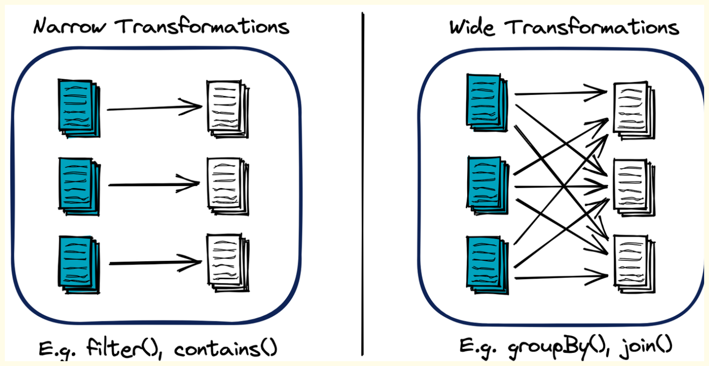
-
Narrow Transformations
In these transformations, all elements that are required to compute the records in a single partition live in the same partition of the parent RDD. Data doesn't need to be shuffled across partitions.
These are transformations that do not require data movement between partitions. In a distributed setup, each executor can process its partition of data independently without needing to communicate with other executors
Example
map, filter, flatmap, sample
-
Wide Transformations
These transformations will have input data from multiple partitions. This typically involves shuffling all the data across multiple partitions.
These transformations require data movement or "shuffling" between partitions. This means an executor might need data from another executor's partition to complete its computation. This data movement makes wide transformations expensive operations
Example
groupbykey, reducebykey, join, distinct, coalesce, repartition
Actions#
Actions in Apache Spark are operations that provide non-RDD values; they return a final value to the driver program or write data to an external system. Actions trigger the execution of the transformation operations accumulated in the Directed Acyclic Graph (DAG).
Actions are operations that trigger the execution of all previous transformations and produce a result. When an action is hit, Spark creates a job.
Example
collect, count, save, show
--- Read & Write operation in Spark are Transformation/Action?
Reading and writing operations in Spark are often viewed as actions, but they're a bit unique.
Read Operation:Transformations , especially read operations can behave in two ways according to the arguments you provide
Note
- Lazily evaluated - It will be performed only when an action is called.
- Eagerly evaluated - A job will be triggered to do some initial evaluations. In case of read.csv()
If it is called without defining the schema and inferSchema is disabled, it determines the columns as string types and it reads only the first line to determine the names (if header=True, otherwise it gives default column names) and the number of fields. Basically it performs a collect operation with limit 1, which means one new job is created instantly
Now if you specify inferSchema=True, Here above job will be triggered first as well as one more job will be triggered which will scan through entire record to determine the schema, that's why you are able to see 2 jobs in spark UI
Now If you specify schema explicitly by providing StructType() schema object to 'schema' argument of read.csv(), then you can see no jobs will be triggered here. This is because, we have provided the number of columns and type explicitly and catalogue of spark will store that information and now it doesn't need to scan the file to get that information and this will be validated lazily at the time of calling action.
Write Operation: Writing or saving data in Spark, on the other hand, is considered an action. Functions like saveAsTextFile(), saveAsSequenceFile(), saveAsObjectFile(), or DataFrame write options trigger computation and result in data being written to an external system.
DAG and Lazy Evaluation#
Spark represents a sequence of transformations on data as a DAG, a concept borrowed from mathematics and computer science. A DAG is a directed graph with no cycles, and it represents a finite set of transformations on data with multiple stages. The nodes of the graph represent the RDDs or DataFrames/Datasets, and the edges represent the transformations or operations applied.
Each action on an RDD (or DataFrame/Dataset) triggers the creation of a new DAG. The DAG is optimized by the Catalyst optimizer (in case of DataFrame/Dataset) and then it is sent to the DAG scheduler, which splits the graph into stages of tasks.
--- Job, Stage and Task in Spark
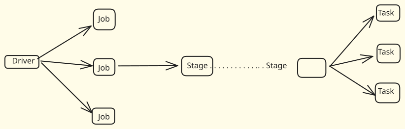
-
Application An application in Spark refers to any command or program that you submit to your Spark cluster for execution. Typically, one spark-submit command creates one Spark application. You can submit multiple applications, but each spark-submit initiates a distinct application.
-
Job Within an application, jobs are created based on "actions" in your Spark code. An action is an operation that triggers the computation of a result, such as collect(), count(), write(), show(), or save(). If your application contains five actions, then five separate jobs will be created. Every job will have a minimum of one stage and one task associated with it.
-
Stage A job is further divided into smaller parts called stages. Stages represent a set of operations that can be executed together without shuffling data across the network. Think of them as logical steps in a job's execution plan. Stages are primarily defined by "wide dependency transformations".
Note
Wide Dependency Transformations (e.g., repartition(), groupBy(), join()) require shuffling data across partitions, meaning data from one partition might be needed by another. Each wide dependency transformation typically marks the end of one stage and the beginning of a new one.
Narrow Dependency Transformations (e.g., filter(), select(), map()) do not require data shuffling; an output partition can be computed from only one input partition. Multiple narrow transformations can be grouped into a single stage.
-
Task A task is the actual unit of work that is executed on an executor. It performs the computations defined within a stage on a specific partition of data. The number of tasks within a stage is directly determined by the number of partitions the data has at that point in the execution. If a stage operates on 200 partitions, it will typically launch 200 tasks.
Relationship Summary:
- One Application can contain Multiple Jobs.
- One Job can contain Multiple Stages.
- One Stage can contain Multiple Tasks
--- What if our cluster capacity is less than the size of data to be processed?
If your cluster memory capacity is less than the size of the data to be processed, Spark can still handle it by leveraging its ability to perform computations on disk and spilling data from memory to disk when necessary.
Let's break down how Spark will handle a 60 GB data load with a 30 GB memory cluster:
-
Data Partitioning: When Spark reads a 60 GB file from HDFS, it partitions the data into manageable blocks, according to the Hadoop configuration parameter dfs.blocksize or manually specified partitions. These partitions can be processed independently.
-
Loading Data into Memory: Spark will load as many partitions as it can fit into memory. It starts processing these partitions. The size of these partitions is much smaller than the total size of your data (60 GB), allowing Spark to work within the confines of your total memory capacity (30 GB in this case).
-
Spill to Disk: When the memory is full, and Spark needs to load new partitions for processing, it uses a mechanism called "spilling" to free up memory. Spilling means writing data to disk. The spilled data is the intermediate data generated during shuffling operations, which needs to be stored for further stages.
-
On-Disk Computation: Spark has the capability to perform computations on data that is stored on disk, not just in memory. Although computations on disk are slower than in memory, it allows Spark to handle datasets that are larger than the total memory capacity.
-
Sequential Processing: The stages of the job are processed sequentially, meaning Spark doesn't need to load the entire dataset into memory at once. Only the data required for the current stage needs to be in memory or disk.
--- How spark perform data partitioning
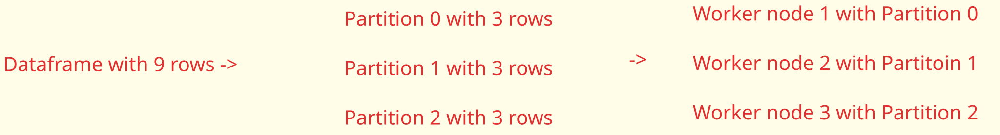
- Data Partitioning: Apache Spark partitions data into logical chunks during reading from sources like HDFS, S3, etc.
- Data Distribution: These partitions are distributed across the Spark cluster nodes, allowing for parallel processing.
- Custom Partitioning: Users can control data partitioning using Spark's repartition(), coalesce() and partitionBy() methods, optimizing data locality or skewness.
When Apache Spark reads data from a file on HDFS or S3, the number of partitions is determined by the size of the data and the default block size of the file system. In general, each partition corresponds to a block in HDFS or an object in S3.
Example
If HDFS is configured with a block size of 128MB and you have a 1GB file, it would be divided into 8 blocks in HDFS. Therefore, when Spark reads this file, it would create 8 partitions, each corresponding to a block.
--- Lazy Evaluation in Spark
Lazy evaluation in Spark means that the execution doesn't start until an action is triggered. In Spark, transformations are lazily evaluated, meaning that the system records how to compute the new RDD (or DataFrame/Dataset) from the existing one without performing any transformation. The transformations are only actually computed when an action is called and the data is required.
Example
spark.read.csv() will not actually read the data until an action like .show() or .count() is performed
Spark Query Plan#
The Spark SQL Engine is fundamentally the Catalyst Optimizer. Its primary role is to convert user code (written in DataFrames, SQL, or Datasets) into Java bytecode for execution. This conversion and optimization process occurs in four distinct phases. It's considered a compiler because it transforms your code into Java bytecode. It plays a key role in optimizing code leveraging concepts like lazy evaluation
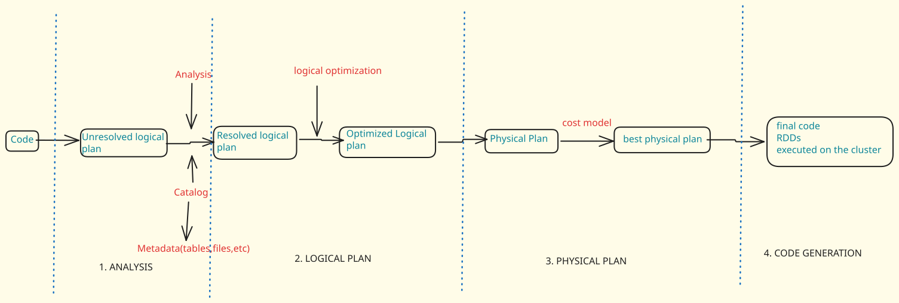
--- Phase 1: Unresolved Logical Plan
This is the initial stage where you write your code using DataFrames, SQL, or Datasets APIs.
When you write transformations (e.g., select, filter, join), Spark creates an "unresolved logical plan". This plan is like a blueprint or a "log" of transformations, indicating what operations need to be performed in what order.
At this stage, the plan is "unresolved" because Spark has not yet checked if the tables, columns, or files referenced actually exist
--- Phase 2: Analysis
To resolve the logical plan by checking the existence and validity of all referenced entities.
This phase heavily relies on the Catalog. The Catalog is where Spark stores metadata (data about data). It contains information about tables, files, databases, their names, creation times, sizes, column names, and data types. For example, if you read a CSV file, the Catalog knows its path, name, and column headers.
The Analysis phase queries the Catalog to verify if the files, columns, or tables specified in the unresolved logical plan actually exist.
If everything is found and validated, the plan becomes a "Resolved Logical Plan". If any entity is not found (e.g., a non-existent file path or a misspelled column name), Spark throws an AnalysisException
--- Phase 3: Logical Optimization
To optimize the "Resolved Logical Plan" without considering the physical execution aspects. It focuses on making the logical operations more efficient.
Note
Predicate Pushdown: If you apply multiple filters, the optimizer might combine them or push them down closer to the data source to reduce the amount of data processed early.
Column Pruning: If you select all columns (SELECT *) but then only use a few specific columns in subsequent operations, the optimizer will realize this and modify the plan to only fetch the necessary columns from the start, saving network I/O and processing.
This phase benefits from Spark's lazy evaluation, allowing it to perform these optimizations before any actual computation begins. An "Optimized Logical Plan"
--- Phase 4: Physical Planning
The "Optimized Logical Plan" is converted into multiple possible "Physical Plans". Each physical plan represents a different strategy for executing the logical operations (e.g., different join algorithms).
Spark applies a "Cost-Based Model" to evaluate these physical plans. It estimates the resources (memory, CPU, network I/O) each plan would consume if executed.
The plan that offers the best resource utilization and lowest estimated cost (e.g., least data shuffling, fastest execution time) is selected as the "Best Physical Plan".
Example
For joins, if one table is significantly smaller than the other, Spark might choose a Broadcast Join. This involves sending the smaller table to all executor nodes where the larger table's partitions reside. This avoids data shuffling (expensive network operations) of the larger table across the cluster, leading to significant performance gains.
The Best Physical Plan, which is essentially a set of RDDs (Resilient Distributed Datasets) ready to be executed on the cluster.
--- Phase 5:Whole-Stage Code Generation
This is the final step where the "Best Physical Plan" (the RDD operations) is translated into Java bytecode.
This bytecode is then sent to the individual executors on the cluster to be executed. This direct bytecode generation improves performance by eliminating interpretation overhead and allowing the JVM to further optimize the code.
--- In what cases will predicate pushdown not work?
- Complex Data Types
Spark's Parquet data source does not push down filters that involve complex types, such as arrays, maps, and struct. This is because these complex data types can have complicated nested structures that the Parquet reader cannot easily filter on.
Here's an example:
root
|-- Name: string (nullable = true)
|-- properties: map (nullable = true)
| |-- key: string
| |-- value: string (valueContainsNull = true)
+----------+-----------------------------+
|Name |properties |
+----------+-----------------------------+
|Afaque |[eye -> black, hair -> black]|
|Naved |[eye ->, hair -> brown] |
|Ali |[eye -> black, hair -> red] |
|Amaan |[eye -> grey, hair -> grey] |
|Omaira |[eye -> , hair -> brown] |
+----------+-----------------------------+
== Physical Plan ==
*(1) Filter (metadata#123[key] = value)
+- *(1) ColumnarToRow
+- FileScan parquet [id#122,metadata#123] Batched: true, DataFilters: [(metadata#123[key] = value)], Format: Parquet, ...
- Unsupported Expressions
In Spark, Parquet data source does not support pushdown for filters involving a .cast operation.
The reason for this behaviour is as follows: .cast changes the datatype of the column, and the Parquet data source may not be able to perform the filter operation correctly on the cast data.
Note
This behavior may vary based on the data source. For example, if you're working with a JDBC data source connected to a database that supports SQL-like operations, the .cast filter could potentially be pushed down to the database.
RDD#
RDDs are the building blocks of any Spark application.
RDDs Stands for
- Resilient: Fault tolerant and is capable of rebuilding data on failure
- Distributed: Distributed data among the multiple nodes in a cluster
- Dataset: Collection of partitioned data with values
--- Here are some key points about RDDs and their properties:
-
Fundamental Data Structure: RDD is the fundamental data structure of Spark, which allows it to efficiently operate on large-scale data across a distributed environment.
-
Immutability: Once an RDD is created, it cannot be changed. Any transformation applied to an RDD creates a new RDD, leaving the original one untouched.
-
Resilience: RDDs are fault-tolerant, meaning they can recover from node failures. This resilience is provided through a feature known as lineage, a record of all the transformations applied to the base data.
-
Lazy Evaluation: RDDs follow a lazy evaluation approach, meaning transformations on RDDs are not executed immediately, but computed only when an action (like count, collect) is performed. This leads to optimized computation.
-
Partitioning: RDDs are partitioned across nodes in the cluster, allowing for parallel computation on separate portions of the dataset.
-
In-Memory Computation: RDDs can be stored in the memory of worker nodes, making them readily available for repeated access, and thereby speeding up computations.
-
Distributed Nature: RDDs can be processed in parallel across a Spark cluster, contributing to the overall speed and scalability of Spark.
-
Persistence: Users can manually persist an RDD in memory, allowing it to be reused across parallel operations. This is useful for iterative algorithms and fast interactive use.
-
Operations: Two types of operations can be performed on RDDs - transformations (which create a new RDD) and actions (which return a value to the driver program or write data to an external storage system).
--- When to Use RDDs (Advantages)
Despite the general recommendation to use DataFrames/Datasets, RDDs have specific use cases where they are advantageous:
-
Unstructured Data: RDDs are particularly well-suited for processing unstructured data where there is no predefined schema, such as streams of text, media, or arbitrary bytes. For structured data, DataFrames and Datasets are generally better.
-
Full Control and Flexibility: If you need fine-grained control over data processing at a very low level and want to optimize the code manually, RDDs provide that flexibility. This means the developer has more control over how data is transformed and distributed.
-
Type Safety (Compile-Time Errors): RDDs are type-safe. This means that if there's a type mismatch (e.g., trying to add an integer to a string), you will get an error during compile time, before the code even runs. This can help catch errors earlier in the development cycle, unlike DataFrames or SQL queries which might only show errors at runtime
--- Why You Should NOT Use RDDs (Disadvantages)
For most modern Spark applications, especially with structured or semi-structured data, RDDs are generally discouraged due to several drawbacks:
-
No Automatic Optimization by Spark: Spark's powerful Catalyst Optimizer does not perform optimizations automatically for RDD operations. This means the responsibility for writing optimized and efficient code falls entirely on the developer.
-
Complex and Less Readable Code: Writing RDD code can be complex and less readable compared to DataFrames, Datasets, or SQL. The code often requires explicit handling of data transformations and aggregations, which can be verbose.
-
Potential for Inefficient Operations: Expensive Shuffling: Without Spark's internal optimizations, RDD operations can lead to inefficient data shuffling. In contrast, DataFrames/Datasets using the "what to" approach allow Spark to rearrange operations (e.g., filter first, then shuffle) to optimize performance, saving significant computational resources.
Example
If you perform a reduceByKey (which requires shuffling data across nodes) before a filter operation, Spark will shuffle all the data first, then filter it. If the filter significantly reduces the dataset size, shuffling the larger pre-filtered dataset becomes a very expensive operation.
- Developer Burden: Because Spark doesn't optimize RDDs, the developer must have a deep understanding of distributed computing and Spark's internals to write performant RDD code. This makes development harder and slower compared to using higher-level APIs
--- Difference
| Criteria | RDD (Resilient Distributed Dataset) | DataFrame | DataSet |
|---|---|---|---|
| Abstraction | Low level, provides a basic and simple abstraction. | High level, built on top of RDDs. Provides a structured and tabular view on data. | High level, built on top of DataFrames. Provides a structured and strongly-typed view on data. |
| Type Safety | Provides compile-time type safety, since it is based on objects. | Doesn't provide compile-time type safety, as it deals with semi-structured data. | Provides compile-time type safety, as it deals with structured data. |
| Optimization | Optimization needs to be manually done by the developer (like using mapreduce). |
Makes use of Catalyst Optimizer for optimization of query plans, leading to efficient execution. | Makes use of Catalyst Optimizer for optimization. |
| Processing Speed | Slower, as operations are not optimized. | Faster than RDDs due to optimization by Catalyst Optimizer. | Similar to DataFrame, it's faster due to Catalyst Optimizer. |
| Ease of Use | Less easy to use due to the need of manual optimization. | Easier to use than RDDs due to high-level abstraction and SQL-like syntax. | Similar to DataFrame, it provides SQL-like syntax which makes it easier to use. |
| Interoperability | Easy to convert to and from other types like DataFrame and DataSet. | Easy to convert to and from other types like RDD and DataSet. | Easy to convert to and from other types like DataFrame and RDD. |
Partitioning and Bucketing#
Partitioning and Bucketing are data optimization techniques used in Spark during the data writing process to improve performance for future read operations, joins, and filters. By deciding how data is organized on disk, you can significantly reduce the amount of data Spark needs to scan.
--- Partitioning
Partitioning organizes data into a hierarchical folder structure based on the distinct values of one or more columns.
For every unique value in the partitioned column, Spark creates a separate folder. For example, partitioning by "Address" (Country) would create folders like Address=India, Address=USA, etc..
When you query data using a filter (e.g., WHERE Country = 'India'), Spark skip all other folders and only reads the relevant one, avoiding a full table scan.
You can partition by multiple columns. The order of columns matters; for example, partitioning by Address then Gender creates gender folders inside each country folder.
# Partitioning by a single column (Address)
df.write \
.partitionBy("Address") \
.format("csv") \
.save("/path/to/destination")
# Partitioning by multiple columns (Address and then Gender)
df.write \
.partitionBy("Address", "Gender") \
.format("csv") \
.save("/path/to/destination_multi")
Partitioning is inefficient for high-cardinality columns (columns with many unique values, like a User ID). If you partition by ID, Spark might create millions of tiny files, which degrades performance.
--- Bucketing
Bucketing is used when partitioning is not suitable, particularly for high-cardinality columns or to optimize joins.
Spark uses a hash function on a specific column to distribute data into a fixed number of "buckets" (files).
Unlike partitioning, bucketing is not supported by the standard .save() method on file systems; it requires using saveAsTable because the metadata must be stored in the Hive Metastore.
If two tables are bucketed on the same column with the same number of buckets, Spark can perform a join without "shuffling" data across the network, which is a very expensive operation.
Spark knows exactly which bucket contains a specific value (e.g., a specific Aadhaar ID), allowing it to search only a small fraction of the data.
If you have 200 tasks running and you ask for 5 buckets, Spark might create \(200 \times 5 = 1,000\) files. To prevent this, repartition the data to match the number of buckets before writing.
# Optimize by matching partitions to buckets
df.repartition(5) \
.write \
.bucketBy(5, "ID") \
.saveAsTable("optimized_bucket_table")
--- Summary Comparison
| Feature | Partitioning | Bucketing |
|---|---|---|
| Logic | Groups data into folders based on column values. | Groups data into a fixed number of files via hashing. |
| Best For | Low-cardinality columns (e.g., Country, Gender). | High-cardinality columns (e.g., ID) and Join optimization. |
| Output | Created as directory structures on the file system. | Created as specific bucketed files within a table. |
| Constraint | Can lead to "too many small files" if cardinality is high. | Must be saved as a table (saveAsTable). |
SparkSession vs SparkContext#
Both Spark Session and Spark Context serve as the entry point into a Spark cluster, similar to how a main method serves as the entry point for code execution in languages like C++ or Java. This means that to run any Spark code, you first need to establish one of these entry points.
--- Spark Session
The Spark Session is the unified entry point introduced in Spark 2.0. It is now the primary way to interact with Spark.
Prior to Spark 2.0 (specifically up to Spark 1.4), if you wanted to work with different Spark functionalities like SQL, Hive, or Streaming, you had to create separate contexts for each (e.g., SQLContext, HiveContext, StreamingContext). The Spark Session encapsulates all these different contexts, providing a single object to access them. This simplifies development as you only need to create a Spark Session to gain access to all necessary functionalities.
When you create a Spark Session, you can pass configurations for resources needed, such as the amount of memory or the number of executors. The Spark Session takes these values and communicates with the Resource Manager (like YARN or Mesos) to request and allocate the necessary driver memory and executors. Once these resources are secured, the Spark Session facilitates the execution of your Spark jobs within that allocated environment.
If you've been using Databricks notebooks, you might have implicitly been using a Spark Session without realizing it. Databricks typically provides a default spark object, which is an instance of SparkSession, allowing you to directly write code like spark.read.format(...). This is why the local setup is demonstrated in the source, as the default session is not automatically provided outside environments like Databricks.
You can configure properties like spark.driver.memory by using the .config() method when building the Spark Session.
--- Spark Context
The Spark Context (SparkContext) was the original entry point for Spark applications before Spark 2.0.
n earlier versions of Spark (up to Spark 1.4), SparkContext was the primary entry point for general Spark operations. However, for specific functionalities like SQL, you needed additional context objects like SQLContext.
While Spark Session has become the dominant entry point, SparkContext is still relevant for RDD (Resilient Distributed Dataset) level operations. If you need to perform low-level transformations directly on RDDs (e.g., flatMap, map), you would typically use the Spark Context. An example provided is writing a word count program using RDDs, where SparkContext comes into use.
With the advent of Spark Session, you do not create a SparkContext directly as a separate entry point anymore. Instead, you can access the SparkContext object through the SparkSession instance. This means that the SparkContext is now encapsulated within the SparkSession.
--- Code Example
Here’s an example demonstrating how to create a Spark Session and then obtain a Spark Context from it, based on the provided transcript:
# First, import the SparkSession class from pyspark.sql
from pyspark.sql import SparkSession
# Create a SparkSession builder
# The .builder() method is used to construct a SparkSession instance
spark_builder = SparkSession.builder
# Configure the SparkSession
# .master("local"): Specifies that Spark should run in local mode.
# This means Spark will use your local machine's resources.
# .appName("Testing"): Sets the name of your Spark application.
# This can be any descriptive name for your project.
# .config("spark.driver.memory", "12g"): An optional configuration to request specific resources,
# here requesting 12GB for the driver memory.
spark_session_config = spark_builder.master("local").appName("Testing").config("spark.driver.memory", "12g")
# Get or Create the SparkSession
# .getOrCreate(): This is a crucial method. If a SparkSession with the specified
# name and configuration already exists, it will retrieve it.
# Otherwise, it will create a new one.
spark = spark_session_config.getOrCreate()
# Print the SparkSession object to verify it's created
print(spark)
# Access the SparkContext from the created SparkSession
# The SparkContext is encapsulated within the SparkSession object.
# This is how you get the sc (SparkContext) object in modern Spark applications.
sc = spark.sparkContext
# Print the SparkContext object
print(sc)
# Example of using SparkSession to read data (common operation)
# This is what you often do in Databricks without explicitly creating a session.
# employee_df = spark.read.format("csv").load("path/to/employee_data.csv")
Repartition vs Coaelesce#
The need for repartition and coalesce arises from issues faced when processing large datasets in Spark, particularly concerning data partitioning.
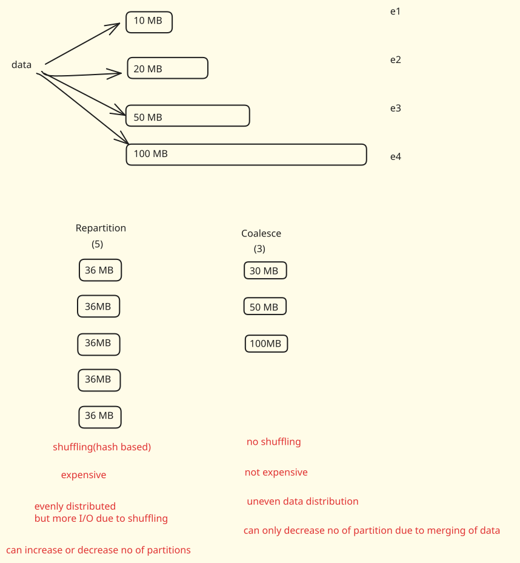
When a DataFrame is created, it's often divided into multiple partitions. Sometimes, these partitions can be of uneven sizes (e.g., 10MB, 20MB, 40MB, 100MB).
Processing smaller partitions (e.g., 10MB) takes less time than larger ones (e.g., 100MB). This leads to idle Spark executors: while one executor is busy with a large partition, others might finish their tasks quickly and then wait for the large partition to complete. This causes time delays and underutilization of allocated resources (e.g., RAM)
This situation often arises after operations like join transformations. For instance, if a join operation is performed on a product column, and one product is a "best-selling product" with a high number of records, all those records might get grouped into a single partition, making it very large. This phenomenon is called data skew.
Users often see messages like "199 out of 200 partitions processed," where the last remaining partition takes a significantly longer time to complete due to its large size.
To deal with these scenarios and optimize performance, Spark provides repartition and coalesce methods
--- repartition
Repartition shuffles the entire dataset across the cluster. This means data from existing partitions can be moved to new partitions.
The primary goal of repartition is to evenly distribute data across the specified number of new partitions. For example, if you have 200MB of data across five uneven partitions and repartition it into five, it will aim for 40MB per partition.
Repartition can increase or decrease the number of partitions. If you initially have 5 partitions but need 10, repartition is the only choice.It can be used when you want to increase the number of partitions to allow for more concurrent tasks and increase parallelism when the cluster has more resources.
Due to the shuffling operation, repartition is generally more expensive and involves more I/O operations compared to coalesce.
Pros and Cons of Repartition are Evenly distributed data. More I/O (Input/Output) because of shuffling. More expensive.
In certain scenarios, you may want to partition based on a specific key to optimize your job. For example, if you frequently filter by a certain key, you might want all records with the same key to be on the same partition to minimize data shuffling. In such cases, you can use repartition() with a column name.
--- coalesce
Coalesce merges existing partitions to reduce the total number of partitions.
Crucially, coalesce tries to avoid full data shuffling. It achieves this by moving data from some partitions to existing ones, effectively merging them locally on the same executor if possible. This makes it less expensive than repartition.
Because it avoids full shuffling, coalesce does not guarantee an even distribution of data across the new partitions. It might result in an uneven distribution, especially if the original partitions were already skewed.
Coalesce can only decrease the number of partitions. It cannot be used to increase the number of partitions. If you need more partitions, you must use repartition.
Pros and Cons of Coalesce: No shuffling (or minimal shuffling). Not expensive (cost-effective). Uneven data distribution.
However, it can lead to data skew if you have fewer partitions than before, because it combines existing partitions to reduce the total number.
--- When to Choose Which?
The choice between repartition and coalesce is use-case dependent
Choose repartition when:
You need to evenly distribute data across partitions, which is crucial for balanced workload across executors.
You need to increase the number of partitions (e.g., if you have too few partitions or want to process data in smaller chunks in parallel).
You are okay with the overhead of a full shuffle, as the benefit of even distribution outweighs the cost.
Dealing with severe data skew is a primary concern.
Choose coalesce when:
You primarily need to decrease the number of partitions (e.g., after filter operations drastically reduce data, or before writing to a single file).
You want to minimize shuffling and I/O costs.
You can tolerate slightly uneven data distribution across partitions, or the data skew is minimal and won't significantly impact performance.
You want to save processing time and cost by avoiding a full shuffle
--- Why doesn't
.coalesce()explicitly show the partitioning scheme?
.coalesce doesn't show the partitioning scheme e.g. RoundRobinPartitioning because the operation only minimizes data movement by merging into fewer partitions, it doesn't do any shuffling. Because no shuffling is done, the partitioning scheme remains the same as the original DataFrame and Spark doesn't include it explicitly in it's plan as the partitioning scheme is unaffected by .coalesce
Spark Strategy Joins#
It is important to distinguish between Join Types and Join Strategies.
Join Types refers to the logical result of the join (e.g., Left Join, Right Join, Inner Join, etc.).
Join Strategies refers to the internal implementation or "strategy" Spark uses to execute the join across a cluster (e.g., Shuffle Sort Merge Join, Broadcast Join).
--- Why Joins are Expensive: The Shuffling Process
Joins are considered "expensive" operations in Spark because they often require shuffling (or "saapling" as referred to in the source), which involves moving data across the network between executors.
If you have two DataFrames of 500MB each with a default HDFS block size of 128MB, Spark will create 4 partitions for each DataFrame. These partitions are distributed across different executors/worker nodes.
To join data on a specific key (e.g., ID), the data for that same key must reside on the same executor. If ID 1 is on Executor A and its corresponding match is on Executor B, Spark must move that data to a common location.
For wide transformations like joins, Spark defaults to creating 200 partitions.
Spark uses a hash-based approach to determine where data goes. For example, it might calculate ID % 200 to determine the partition number. This ensures that the same ID from both DataFrames always ends up in the same partition.
Conceptual Code Example (Shuffling):
# Spark defaults to 200 partitions for shuffle operations
spark.conf.set("spark.sql.shuffle.partitions", "200")
# Performing a join triggers shuffling to align keys across the cluster
df_joined = df1.join(df2, df1.id == df2.id, "inner")
Spark utilizes five primary strategies to perform joins:
- Shuffle Sort Merge Join (SSMJ)
- Shuffle Hash Join (SHJ)
- Broadcast Hash Join (BHJ)
- Cartesian Join
- Broadcast Nested Loop Join (BNLJ)
--- Shuffle Sort Merge Join (SSMJ)
This is the default join strategy in Spark.
Data with the same keys are moved to the same partitions. The data within each partition is sorted by the join key. Spark iterates through the sorted data and merges matching keys. The sorting phase typically takes \(O(n \log n)\) time.It is CPU-intensive due to sorting but very stable for large datasets because it doesn't require the entire table to fit in memory.
--- Shuffle Hash Join (SHJ)
Data is moved to the same partitions. Spark builds a hash table of the smaller DataFrame in memory. It then probes this hash table using keys from the larger DataFrame. The join/lookup phase is \(O(1)\). It is Memory-intensive. If the hash table exceeds the executor's memory, it will trigger an Out of Memory (OOM) exception.
--- Broadcast Nested Loop Join (BNLJ)
This is considered the most expensive join strategy. It is used when there is no equality condition (non-equi joins), such as df1.id > df2.id. It operates at \(O(n^2)\) because it essentially involves two nested loops to compare every row of one table with every row of the other.
Conceptual Code Example (Non-Equi Join):
# A non-equi join often forces a Broadcast Nested Loop Join
df_non_equi = df1.join(df2, df1.id > df2.id, "inner")
--- Summary of Trade-offs
| Strategy | Resource Focus | Best For |
|---|---|---|
| Sort Merge Join | CPU (Sorting) | Large datasets; Very stable; Default |
| Shuffle Hash Join | Memory (Hash Table) | When one table is small enough to fit in memory |
| Broadcast Nested Loop | CPU/Memory (Nested Loop) | Non-equi joins (e.g., >, <); Very slow |
--- How Broadcast Join Works
Broadcast Hash Join is a specialized join strategy used to optimize performance by eliminating the need for data shuffling,. While standard joins like Shuffle Sort Merge Join (the Spark default) move data across the network to align keys, a Broadcast Join sends the entire smaller dataset to every worker node,.
The core mechanism involves the Driver and the Executors - The Spark Driver identifies a table that is small enough to be broadcast. It must have sufficient memory to store this table locally before distributing it. The Driver sends a complete copy of the small table to every Executor in the cluster.
Once the small table is residing on every Executor, each Executor can perform the join locally using its own partition of the large table. This makes the Executors "self-sufficient" because they no longer need to fetch data from other nodes via shuffling.
--- When to Use Broadcast Joins
It is ideal when you have one large table (e.g., 1GB) and one small table (e.g., less than 10MB). Use it to prevent "cluster choking" caused by moving massive amounts of data across the network. While not the primary focus of this source, the transcript notes that avoiding shuffling is the main goal of this strategy.
--- Checking and Setting the Broadcast Threshold
Spark uses a default threshold to decide if a table should be automatically broadcast. This is typically 10 MB.
# To get the current broadcast threshold (returns value in bytes)
current_threshold = spark.conf.get("spark.sql.autoBroadcastJoinThreshold")
print(current_threshold) # Default is 10485760 (10 MB)
# To change the threshold (e.g., to 20 MB)
# You must convert MB to bytes
spark.conf.set("spark.sql.autoBroadcastJoinThreshold", "20971520")
# To disable automatic broadcasting
spark.conf.set("spark.sql.autoBroadcastJoinThreshold", "-1")
--- Forcing a Broadcast Join with Hints
If Spark does not automatically choose a broadcast join, you can provide a hint in your code to force it.
from pyspark.sql.functions import broadcast
# Standard join might result in a Sort Merge Join
# df_joined = df_large.join(df_small, "id")
# Using the broadcast hint to force a Broadcast Hash Join
df_joined = df_large.join(broadcast(df_small), df_large.id == df_small.id, "inner")
# Inspecting the physical plan to verify the join strategy
df_joined.explain()
--- Identifying Joins in the Spark Web UI
In the Spark Web UI (SQL tab), you can distinguish between join types by looking at the execution graph:
Will show an Exchange (Shuffle), followed by a Sort, and then a SortMergeJoin. Will show a BroadcastExchange and then a BroadcastHashJoin, with no Exchange (shuffle) for the large table.
--- Potential Risks and Failure Points
Despite its efficiency, Broadcast Join can fail in the following scenarios:
Since the small table must first be collected by the Driver, if the table is too large for the Driver's memory, the application will crash. If the Executor's memory is already near capacity, adding a broadcasted table (even a 100MB one) can trigger an OOM during the join operation. Attempting to broadcast a very large file (e.g., 1GB) will saturate the network because that file must be sent to every single executor.
--- Summary Table
| Feature | Shuffle Sort Merge Join (SSMJ) | Broadcast Hash Join (BHJ) |
|---|---|---|
| Data Movement | Shuffles both tables | Broadcasts only the small table |
| Network Cost | High (Shuffle) | Low (if table is small) |
| Default Size | Any size | < 10 MB (Default) |
| Stability | High | Risky if small table is too large |
Spark Memory Management#
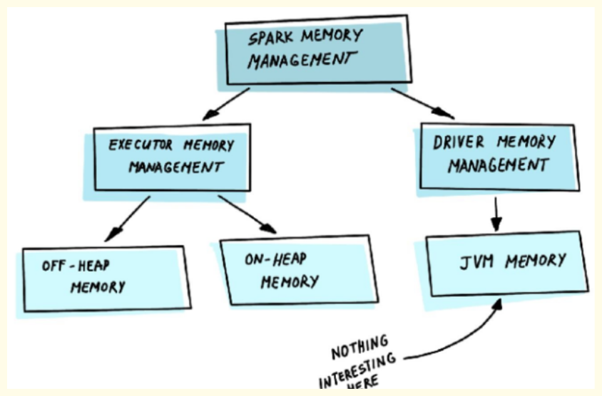
When the Spark application is launched, the Spark cluster will start two processes — Driver and Executor.
The driver is a master process responsible for creating the Spark context, submission of Spark jobs, and translation of the whole Spark pipeline into computational units — tasks. It also coordinates task scheduling and orchestration on each Executor.
Driver memory management is not much different from the typical JVM process.
The executor is responsible for performing specific computational tasks on the worker nodes and returning the results to the driver, as well as providing storage for RDDs. And its internal memory management is very interesting.
Executor memory#
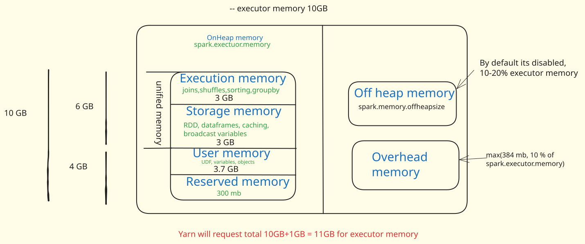
A Spark executor container has three major components of memory:
--- On-Heap Memory
This occupies the largest block and is where most of Spark's operations run .The On-Heap memory is managed by the JVM (Java Virtual Machine). Even though Spark is written in Scala and you might write code in Python using PySpark (which uses a wrapper around Java APIs), the underlying execution still happens on the JVM.
The On-Heap memory is further divided into four sections:
-
Execution Memory: It is mainly used to store temporary data in the shuffle, join, sort, aggregation, etc. Most likely, if your pipeline runs too long, the problem lies in the lack of space here.
Note
Execution Memory = usableMemory * spark.memory.fraction * (1 - spark.memory.storageFraction).
As Storage Memory, Execution Memory is also equal to 30% of all system memory by default (1 * 0.6 * (1 - 0.5) = 0.3).
-
Storage Memory: This is where caching (for RDDs or DataFrames) occurs, and it's also used for storing broadcast variables. Storage Memory is used for caching and broadcasting data.
Note
Storage Memory = usableMemory * spark.memory.fraction * spark.memory.storageFraction
Storage Memory is 30% of all system memory by default (1 * 0.6 * 0.5 = 0.3).
-
User Memory: Used for storing user objects such as variables, collections (lists, sets, dictionaries) defined in your program, or User Defined Functions (UDFs). It is mainly used to store data needed for RDD conversion operations, such as lineage. You can store your own data structures there that will be used inside transformations. It's up to you what would be stored in this memory and how. Spark makes completely no accounting on what you do there and whether you respect this boundary or not.
Note
User Memory = usableMemory * (1 - spark.memory.fraction)
It is 1 * (1 - 0.6) = 0.4 or 40% of available memory by default.
-
Reserved Memory: This is the memory Spark needs for running itself and storing internal objects The most boring part of the memory. Spark reserves this memory to store internal objects. It guarantees to reserve sufficient memory for the system even for small JVM heaps.
Note
Reserved Memory is hardcoded and equal to 300 MB (value RESERVED_SYSTEM_MEMORY_BYTES in source code). In the test environment (when spark.testing set) we can modify it with spark.testing.reservedMemory.
usableMemory = spark.executor.memory - RESERVED_SYSTEM_MEMORY_BYTES
-
Unified memory:
Unified memory refers to the Execution memory and Storage memory combined.
- Why it's "Unified": It's due to Spark's dynamic memory management strategy.This means if execution memory needs more space, it can use some of the storage memory, and vice-versa. There is a priority given to execution memory because critical operations like joins, shuffles, sorting, and group by happen there. The division between execution and storage is represented as a movable "slider".
Evolution of Unified Memory (Pre-Spark 1.6 vs. Post-Spark 1.6):
- Before Spark 1.6: The space allocated to execution and storage memory was fixed. If execution needed more memory but its fixed allocation was full, it could not use available space in storage memory, leading to wasted memory.
- After Spark 1.6 (>= Spark 1.6): The "slider" became movable, allowing dynamic allocation based on needs.
-
Rules for Slider Movement (Dynamic Allocation):
Execution needs more memory, and Storage has vacant space: If storage is not using all its allocated space, execution can simply use that vacant portion of memory.
Execution needs more memory, and Storage is occupied: If storage is using its blocks, it will evict some of its blocks (least recently used or LRU algorithm) to make room for execution memory.
Storage needs more memory: In this case, because execution has priority, none of the execution blocks will be evicted. Storage must evict its own blocks (based on LRU) to free up space for new cached data
--- Off-Heap Memory
Off-Heap memory is often the least talked about and least used, but it can be very useful in certain situations. - Default State: It is disabled by default (spark.memory.offHeap.enabled is set to zero).
- Enabling and Sizing: You can enable it by setting spark.memory.offHeap.enabled to true and specify its size using spark.memory.offHeap.size. A good starting point for its size is 10% to 20% of your executor memory.
- Structure: Similar to unified memory, off-heap memory also has two parts: execution and storage.
- Purpose/Use Case: It becomes useful when the on-heap memory is full.
- When on-heap memory is full, a garbage collection (GC) cycle occurs, which pauses the program's operation to clean up unwanted objects. These GC pauses can negatively impact program performance.
- Off-Heap memory is managed by the Operating System, not the JVM. Therefore, it is not subject to the JVM's GC cycles.
- Developer Responsibility: Since it's not subject to GC, the Spark developer is responsible for both the allocation and deallocation of memory in the off-heap space. This adds complexity and requires caution to avoid memory leaks.
- Performance: Off-heap memory is slower than on-heap memory. However, if Spark had to choose between spilling data to disk or using off-heap memory, using off-heap memory would be a better choice because writing to disk is several orders of magnitude slower
--- Overhead Memory
Used for internal system-level operations
Example
Calculation: The overhead memory is defined as the maximum of 384 MB or 10% of the spark.executor.memory. If spark.executor.memory is 10 GB, 10% of it is 1 GB. max(384 MB, 1 GB) = 1 GB. So, the overhead memory would be 1 GB.
It's important to note that the spark.executor.memory parameter only allocates for on-heap memory. When Spark requests memory from a cluster manager (like YARN), it adds the executor memory and the overhead memory. If off-heap memory is enabled, it will also add that amount to the request.
Example
If spark.executor.memory is 10 GB, and overhead is 1 GB (and off-heap is disabled), Spark will request 10 GB + 1 GB = 11 GB from the cluster manager for that container
--- Why Out of Memory Occurs Even When Spillage is Possible Despite the ability to spill data to disk from the Execution Memory Pool, an Out of Memory Exception can still occur, especially during operations like joins or aggregations:
-
The Problem of Data Skew: If data for a single key (e.g., ID=1) becomes excessively large (e.g., 3GB), exceeding the available Execution Memory Pool (e.g., 2.9GB), it cannot be processed.
-
Impossibility of Partial Spillage: During operations like joins, all data related to a specific key must be present on the same executor for the operation to complete correctly. If a 3GB chunk of data for a single ID has to be processed, and only 2.9GB is available, it's impossible to spill just a portion of that key's data. Spilling half of the 3GB data would mean the join would not yield the correct result for that key. Therefore, if a single partition or a single key's data exceeds the physical memory capacity of the executor's Execution Memory Pool (even with potential spill), an Out of Memory Exception is inevitable.
--- Solutions to Out of Memory Exception
- Repartitioning: Redistributing data across more partitions.
- Salting: A technique to add a "salt" to skewed keys to distribute them more evenly during shuffles.
- Sorting: Pre-sorting data can sometimes help with certain types of joins (e.g., Sort-Merge Join) to reduce memory pressure.
Driver memory#
The Spark driver has its own dedicated memory. You can configure the driver's memory when starting a PySpark session.
Requesting Driver Memory: To request a specific amount of driver memory, you can use the pyspark command with the --driver-memory flag: pyspark --driver-memory 1g
This command requests 1 GB of driver memory from your local setup. After starting the session, you can verify the Spark driver memory configuration by navigating to localhost:4040/jobs in your web browser.
--- Types of Driver Memory Within the Spark driver, there are two main types of memory that work together
-
JVM Heap Memory (spark.driver.memory):This is the primary memory allocated for the driver's Java Virtual Machine (JVM) processes. All JVM-related operations, such as scheduling tasks and handling responses from executors, primarily use this memory.This is what you configure using --driver-memory or spark.driver.memory.
-
Memory Overload (spark.driver.memoryOverhead): This memory is dedicated to non-JVM processes. It handles objects created by your application that are not part of the JVM heap. It also accounts for the memory requirements of the application master container itself, which hosts the driver.
Note
By default, spark.driver.memoryOverhead is calculated as 10% of spark.driver.memory. However, there's a minimum threshold: if 10% of spark.driver.memory is less than 384 MB, then spark.driver.memoryOverhead will default to 384 MB. The system picks whichever value is higher.
- Example 1 (1GB driver memory): 10% of 1GB is 100 MB. Since 100 MB is less than 384 MB, the memoryOverhead will be 384 MB.
- Example 2 (4GB driver memory): 10% of 4GB is 400 MB. Since 400 MB is greater than 384 MB, the memoryOverhead will be 400 MB.
- Example 3 (20GB driver memory): 10% of 20GB is 2GB. In this case, the memoryOverhead would be 2GB memory**
--- Common Reasons for Driver Out of Memory
Besides the collect() method, several other common scenarios can lead to driver OOM:
-
Using collect() Method on Large Datasets: As demonstrated, attempting to pull all data to the driver's memory will cause an OOM if the data size exceeds the driver's capacity.
-
Broadcasting Large DataFrames/Tables: Broadcasting is a technique used in Spark to optimize joins by sending a smaller DataFrame or table to all executors so that the larger DataFrame can be joined locally without shuffling data. When you broadcast data (e.g., df2 and df3 in the example), the driver first merges and holds this data in its memory. Then, the driver sends this combined data to all executors. If you broadcast multiple large DataFrames (e.g., five 50 MB DataFrames, totaling 250 MB) and the driver doesn't have enough memory to hold them before distributing them, it will lead to a driver OOM error. This is why broadcasting is recommended only for small tables/DataFrames.
- Excessive Object Creation and Heavy Non-JVM Processing: If your Spark application creates many objects or performs heavy processing that falls under non-JVM operations, it consumes the memoryOverhead. If the memoryOverhead is insufficient, it can lead to OOM errors often indicated as being "due to memory overhead".
-
Incorrect Memory Configuration: Manually setting spark.driver.memory or spark.driver.memoryOverhead to values that are too low for the workload can lead to OOM.
Example
If you have a 20 GB driver but incorrectly set spark.driver.memoryOverhead to 1 GB when it should ideally be 2 GB (10% of 20GB), you might encounter an OOM error related to memoryOverhead
--- Handling and Solving Driver Out of Memory Based on the reasons for OOM, the solutions are often direct:
- Avoid collect() on Large Data: For large datasets, never use df.collect() unless you are absolutely certain the data size is small enough to fit within the driver's memory. Instead, use df.show() for quick inspection. If you need to process all data, consider writing it to a file system (like HDFS or S3) or processing it in a distributed manner across executors.
- Manage Broadcasted Data Carefully: Only broadcast DataFrames or tables that are genuinely small. Before broadcasting, ensure the driver's memory (specifically the JVM heap) is large enough to hold the combined size of all dataframes you plan to broadcast.
- Increase Driver Memory and Memory Overhead: If your application performs extensive non-JVM operations or creates many objects, you might need to increase spark.driver.memory and/or spark.driver.memoryOverhead. If you observe "due to memory overhead" errors, explicitly increasing spark.driver.memoryOverhead beyond its default 10% (while respecting system limits) might resolve the issue
Spark Submit#
Spark Submit is a command-line tool that allows you to trigger or run your Spark applications on a Spark cluster. It packages all the required files and JARs (Java Archive files) and deploys them to the Spark cluster for execution. It is used to run jobs on various types of Spark clusters
--- Where is Your Spark Cluster Located?
Spark clusters can be deployed in multiple environments. When using Spark Submit, you specify the location of your master node.
Common cluster types include:
- Standalone Cluster: A simple, self-contained Spark cluster. An example master configuration for a standalone cluster could look like spark://10.160.78.10:7077, where 7077 is the default port.
- Local Mode: For running Spark applications on your local machine, typically for development or testing. The master configuration is simply local.
- YARN (Yet Another Resource Negotiator): A popular resource management system in the Hadoop ecosystem. The master configuration is yarn.
- Kubernetes: A container orchestration system.
- Mesos: Another cluster management platform
Example
spark-submit
--master {stanadlone,yarn.mesos,kubernetes}
--deploy-mode {client/cluster}
--class mainclass.scala
--jars mysql-connector.jar
--conf spark.dynamicAllocation.enabled=true
--conf spark.dynamicAllocation.minExecutors=1
--conf spark.dynamicAllocation.maxExecutors=10
--conf spark.sql.broadcastTimeout=3600
--conf spark.sql.autobroadcastJoinThreshold=100000
--conf spark.executor.cores=2
--conf spark.executor.instances=5
--conf spark.default.parallelism=20
--conf spark.driver.maxResultSize=1G
--conf spark.network.timeout=800
--conf spark.driver.maxResultSize=1G
--conf spark.network.timeout=800
--driver-memory 1G
--executor-memory 2G
--num-executors 5
--executor-cores 2
--py-files /path/to/other/python/files.zip
/path/to/your/python/wordcount.py /path/to/input/textfile.txt
-
master: This is the master URL for the cluster. It can be a URL for any Spark-supported cluster manager. For example, local for local mode, spark://HOST:PORT for standalone mode, mesos://HOST:PORT for Mesos, or yarn for YARN.
-
deploy-mode: This can be either client (default) or cluster. In client mode, the driver runs on the machine from which the job is submitted. In cluster mode, the framework launches the driver inside the cluster.
-
class: This is the entry point for your application, i.e., where your main method runs. For Java and Scala, this would be a fully qualified class name.
-
jars: This argument allows you to provide paths to external JAR files that your Spark application depends on. You can provide multiple JAR files as a comma-separated list. It's recommended to use absolute paths for JAR files to prevent future issues, even if they are in the same directory
-
conf: This is used to set any Spark property. For example, you can set Spark properties like spark.executor.memory, spark.driver.memory, etc.
- spark.dynamicAllocation.enabled true: Enables dynamic memory allocation.
- spark.dynamicAllocation.minExecutors 1: Sets the minimum number of executors to 1.
- spark.dynamicAllocation.maxExecutors 10: Sets the maximum number of executors to 10. This prevents a single process from hogging all resources. This is beneficial because if a process reserves memory but doesn't use it, dynamic allocation can free up that idle memory for other processes.
- Broadcast Threshold: This configuration determines the maximum size of data that Spark will automatically broadcast to all worker nodes when performing a join. The default is 10MB.
- Broadcast Timeout: This sets the maximum time (in seconds) that a broadcast operation is allowed to take before timing out. A common general setting might be 600 seconds (10 minutes) or 1200 seconds (20 minutes), while 3600 seconds (1 hour) is considered very long and can significantly delay job completion
- spark.executor.cores=2 sets the number of cores to use on each executor.
- spark.executor.instances=5: sets the number of executor instances
- spark.default.parallelism=20: sets the default number of partitions in RDDs returned by transformations like join(), reduceByKey(), and parallelize() when not set by user.
- spark.driver.maxResultSize=1G: limits the total size of the serialized results of all partitions for each Spark action (e.g., collect). This should be at least as large as the largest object you want to collect.
- spark.network.timeout=800: sets the default network timeout value to 800 seconds. This configuration plays a vital role in cases where you deal with large shuffles.
-
driver-memory: Specifies the amount of memory allocated to the Spark Driver program.
-
executor-memory: Specifies the amount of memory allocated to each Spark Executor.
-
num-executors: Specifies the total number of executors to launch for the application. Combined with --executor-memory, this implies the total executor memory required (e.g., 2 GB/executor 5 executors = 10 GB total executor memory).
-
executor-cores: Specifies the number of CPU cores allocated to each executor. This determines how many parallel tasks an executor can run
-
files: This argument is used to specify non-Python files (e.g., configuration files like .ini, .json, .csv) that your Spark application needs. Similar to --py-files, these are bundled and distributed to all worker nodes
After all the Spark Submit configurations, you provide the path to your main application script (e.g., main.py). Any values provided after the main script are treated as command-line arguments that can be accessed within your script.
-
main.py: This is typically accessed as sys.argv in Python.
-
Subsequent arguments: These are sys.argv, sys.argv, and so on. They are useful for passing dynamic parameters like environment names (e.g., dev, qa, prod) to control execution flow within your script without changing the script itself
-
application-jar: This is a path to your compiled Spark application.
-
application-arguments: These are arguments that you need to pass to your Spark application
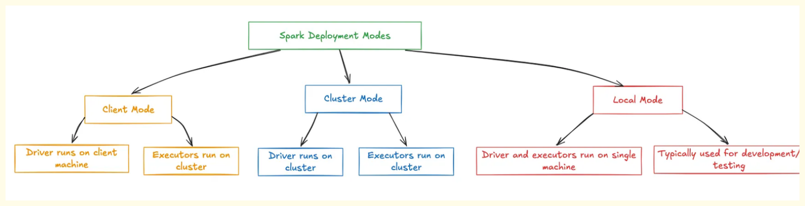
--- Client Mode
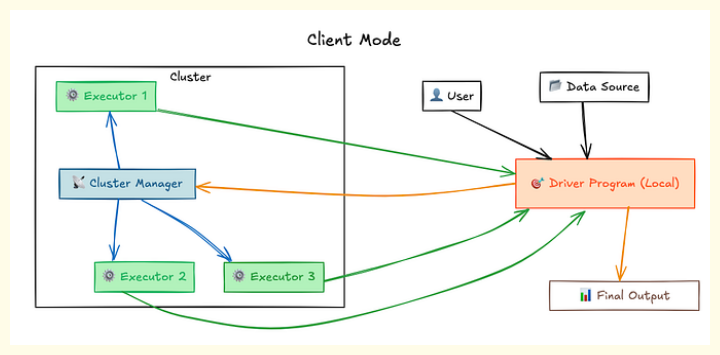
In Client mode, the Spark Driver runs directly on the edge node (or the machine from which the spark-submit command is executed).
The Executors, however, still run on the worker nodes within the cluster.
- Advantages:
- Easy Debugging and Real-time Logs: Logs (STD OUT and STD ERR) are generated directly on the client machine (edge node). This makes it very easy for developers to monitor the process, see real-time output, debug issues, and observe errors as they occur. This mode is highly suitable for development and testing of small code snippets.
- Disadvantages:
- Vulnerability to Edge Node Shutdown: If the edge node is shut down, either accidentally or intentionally, the Spark Driver (running on it) will be terminated. Since the Driver coordinates the entire application, its termination will cause all associated Executors to be killed, leading to the entire Spark job stopping abruptly and incompletely.
- High Network Latency: Communication between the Driver (on the edge node) and the Executors (on worker nodes in the cluster) involves two-way communication across the network. This can introduce network latency, especially for operations like Broadcaster, where data needs to be first sent to the Driver and then distributed to Executors.
- Potential for Driver Out of Memory (OOM) Errors: If multiple users submit jobs in Client mode from the same edge node, and their collective Driver memory requirements exceed the edge node's physical memory capacity (which is typically lower than worker nodes), processes may fail to start or encounter Driver OOM errors
When u start a spark shell, application driver creates the spark session in your local machine which request to Resource Manager present in cluster to create Yarn application. YARN Resource Manager start an Application Master (AM container). For client mode Application Master acts as the Executor launcher. Application Master will reach to Resource Manager and request for further containers. Resource manager will allocate new containers. These executors will directly communicate with Drivers which is present in the system in which you have submitted the spark application.
--- Cluster Mode
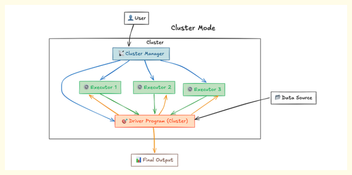
For cluster mode, there’s a small difference compare to client mode in place of driver. Here Application Master will create driver in it and driver will reach to Resource Manager.
In Cluster mode, the Spark Driver (Application Master container) is launched and runs on one of the worker nodes within the Spark cluster. The Executors also run on other worker nodes in the cluster.
- Advantages:
- Resilience and Disconnect-ability: Once a Spark job is submitted in Cluster mode, the Driver runs independently within the cluster. This means the user can disconnect from or even shut down their edge node machine without affecting the running Spark application. This makes it ideal for long-running jobs.
- Low Network Latency: Both the Driver and the Executors are running within the same cluster. This proximity significantly reduces network latency between them, leading to more efficient data transfer and communication.
- Scalability and Resource Utilization: Worker nodes are provisioned with significant memory and processing capabilities. By running the Driver on a worker node, the application can leverage the cluster's robust resources, reducing the likelihood of Driver OOM issues, even with many concurrent jobs.
- Suitable for Production Workloads: Cluster mode is the recommended deployment mode for production workloads, especially for scheduled jobs that run automatically and do not require constant real-time monitoring on the client side.
- Disadvantages: Indirect Log Access: Logs and output are not directly displayed on the client machine. When a job is submitted in Cluster mode, an Application ID is generated. Users must use this Application ID to access the Spark Web UI (User Interface) to track the job's status, progress, and logs. This adds an extra step for monitoring compared to Client mode
--- Local Mode
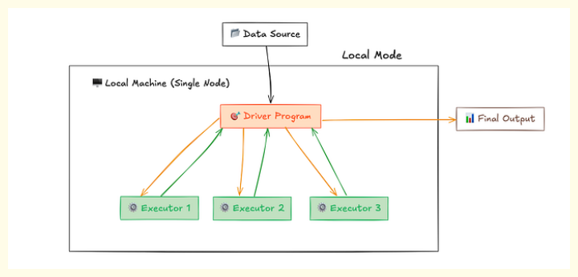
In local mode, Spark runs on a single machine, using all the cores of the machine. It is the simplest mode of deployment and is mostly used for testing and debugging.
--- Comparison
| Feature | Client Mode | Cluster Mode |
|---|---|---|
| Driver Location | Edge Node (or client machine) | Worker Node within the cluster |
| Log Generation | On client machine (STD OUT, STD ERR) | Application ID generated; view via Spark Web UI |
| Debugging | Easy, real-time feedback | Requires checking Spark Web UI |
| Network Latency | High (Driver <-> Executors across network) | Low (Driver <-> Executors within cluster) |
| Edge Node Shutdown | Application stops (Driver killed) | Application continues to run |
| Driver Out of Memory | Higher chance if many users/low edge node memory | Lower chance (cluster has more resources) |
| Use Case | Development, small code snippets, debugging | Production workloads, long-running jobs |
AQE#
--- Key Features of AQE
AQE provides three main capabilities to improve performance: 1. Dynamically Coalescing Shuffle Partitions. 2. Dynamically Switching Join Strategies. 3. Dynamically Optimizing Skew Joins.
--- Dynamically Coalescing Shuffle Partitions
When Spark shuffles data (e.g., during a groupBy or join), it creates a default number of shuffle partitions—usually 200.
If the dataset is small, 200 partitions result in many empty or tiny partitions. This wastes resources because the Spark scheduler must still manage, schedule, and monitor tasks for these empty partitions, leading to unnecessary overhead.
AQE's Shuffle Reader observes the data size after the shuffle. If it finds many small partitions, it merges (coalesces) them into a smaller number of larger partitions at runtime.
Example
A 25 MB dataset originally split into 200 partitions might be coalesced by AQE into a single partition, reducing the number of tasks from 200 to 1. This saves CPU cores and scheduling time.
# External Information: Enabling AQE and Coalescing
spark.conf.set("spark.sql.adaptive.enabled", "true")
spark.conf.set("spark.sql.adaptive.coalescePartitions.enabled", "true")
--- Dynamically Switching Join Strategies
Spark usually decides a join strategy (like Sort-Merge Join or Broadcast Hash Join) during the initial planning phase based on the estimated size of the tables.
Initial estimates can be wrong. For example, a 10 GB table might be reduced to 5 MB after several filters and transformations. Without AQE, Spark would stick to the slower Sort-Merge Join.
AQE monitors the actual size of the data after transformations. If one side of the join becomes small enough (e.g., less than 10 MB), AQE dynamically switches the strategy from Sort-Merge Join to Broadcast Hash Join at runtime. Broadcast joins are significantly faster as they avoid the expensive shuffling and sorting required by Sort-Merge joins.
# External Information: Conceptual Spark SQL example
# Initial tables are large (10GB and 20GB), triggering Sort-Merge Join
df1 = spark.table("fact_sales") # 10GB
df2 = spark.table("dim_products") # 20GB
# A filter is applied that reduces dim_products to 5MB
filtered_df2 = df2.filter(df2.category == "Electronics")
# With AQE enabled, Spark switches to Broadcast Join at runtime
# because filtered_df2 is now < 10MB.
result = df1.join(filtered_df2, "product_id")
--- Dynamically Optimizing Skew Joins
Data skew occurs when data is distributed unevenly across partitions. For instance, if "Sugar" accounts for 80% of sales, the partition containing "Sugar" will be much larger than others.
One large partition causes a "199 out of 200 tasks completed" scenario, where one task takes a very long time or fails with an Out of Memory (OOM) error.
AQE identifies skewed partitions and splits them into smaller sub-partitions. 1. The large partition (e.g., Sugar data) is split into multiple smaller parts. 2. To ensure the join still works, the corresponding data on the other side of the join (the non-skewed table) is duplicated for each new sub-partition. Thresholds for Skew: AQE identifies a partition as skewed if: 1. The partition size is greater than 256 MB. 2. The partition size is more than 5 times the median partition size.
# External Information: AQE Skew Join Configurations
spark.conf.set("spark.sql.adaptive.skewJoin.enabled", "true")
spark.conf.set("spark.sql.adaptive.skewJoin.skewedPartitionFactor", "5")
spark.conf.set("spark.sql.adaptive.skewJoin.skewedPartitionThresholdInBytes", "256MB")
Cache & Persist#
The methods persist() and cache() in Apache Spark are used to save the RDD, DataFrame, or Dataset in memory for faster access during computation. They are effectively ways to optimize the execution of your Spark jobs, especially when you have repeated transformations on the same data. However, they differ in how they handle the storage:
--- cache
-
What is Caching in Spark? Caching is an optimization technique in Spark that allows you to store intermediate results in memory. This prevents Spark from re-calculating the same data repeatedly when it is used multiple times in subsequent transformations.
-
Where is Cached Data Stored? When data is cached, it is stored within the Storage Memory Pool of a Spark Executor. An executor's memory is divided into three parts: User Memory, Spark Memory, and Reserved Memory. Spark Memory, in turn, contains two pools: Storage Memory Pool and Execution Memory Pool. Cached data specifically resides in the Storage Memory Pool. If the Storage Memory Pool fills up, Spark might evict (remove) data that is not frequently used (using an LRU - Least Recently Used - fashion) or spill it to disk.
-
Why Do We Need Caching? Spark operates with lazy evaluation, meaning transformations are not executed until an action is called. When an action is triggered, Spark builds a Directed Acyclic Graph (DAG) to determine the lineage of the data. If a DataFrame (DF) is used multiple times, Spark will re-calculate it from the beginning each time it's referenced, because DataFrames are immutable and executors' memories are short-lived
-
How Caching Helps: By calling .cache() on df, its intermediate result is stored in the Storage Memory Pool. Now, whenever df is needed again, Spark directly retrieves it from memory instead of re-calculating it. This significantly reduces computation time and improves efficiency
-
When Not to Cache? You should avoid caching data when the DataFrame is very small or when its re-calculation time is negligible. Caching consumes memory, and if the benefits of caching don't outweigh the memory consumption, it's better to avoid it.
-
Limitations of Caching: If the cached data's partitions are larger than the available Storage Memory Pool, the excess partitions will not be stored in memory and will either be re-calculated on the fly or spilled to disk if using a storage level that supports it. Spark does not store partial partitions; a partition is stored entirely or not at all. If a cached partition is lost (e.g., due to an executor crash), Spark will re-calculate it using the DAG lineage
-
How to Uncache Data - To remove data from the cache, you can use the .unpersist() method.
When you call df.cache(), it internally calls df.persist() with a default storage level of MEMORY_AND_DISK.
persist() offers more flexibility because it allows you to specify the desired storage level as an argument
--- persist(storageLevel)
Storage levels define where data is stored (memory, disk, or both) and how it is stored (serialized or deserialized, and with replication). These levels provide fine-grained control over how cached data is managed, balancing performance, fault tolerance, and memory usage.
To use StorageLevel with persist(), you need to import it: from pyspark import StorageLevel
Here are the different storage levels explained:
-
MEMORY_ONLY:
Stores data only in RAM (deserialized form). If memory is insufficient, partitions will be re-calculated when needed. Fastest processing because data is in memory and readily accessible. High memory utilization, potentially limiting other operations.
For small to medium-sized datasets that fit entirely in memory and where re-calculation overhead is high.
-
MEMORY_AND_DISK:
Default for cache(). Attempts to store data in RAM first (deserialized form). If RAM is full, excess partitions are spilled to disk (serialized form). Provides a good balance of speed and resilience; data is less likely to be re-calculated.
DisDisk access is slower than memory. Data read from disk (serialized) requires CPU to deserialize it, leading to higher CPU utilization. For larger datasets that might not fully fit in memory but where performance is still critical.
-
MEMORY_ONLY_SER:
Stores data in RAM only, but in a serialized form. Serialization saves memory space, allowing more data to be stored in the same amount of RAM (e.g., 5GB uncompressed might become 8GB serialized). DisData needs to be deserialized by the CPU when accessed, leading to higher CPU utilization and slightly slower access compared to MEMORY_ONLY. This serialization specifically works for Java and Scala objects, and not for Python objects (though Python has its own pickling mechanisms, the _SER storage levels in Spark are typically for JVM objects). When memory is a major constraint and you can tolerate increased CPU usage for deserialization.
-
MEMORY_AND_DISK_SER:
Stores data first in RAM (serialized), then spills to disk (serialized) if memory is full. Combines memory saving of serialization with resilience of disk storage. DisHigh CPU usage due to deserialization for both memory and disk reads. For very large datasets where memory constraints are severe and some CPU overhead for deserialization is acceptable.
-
DISK_ONLY:
Stores data only on disk (serialized form). Slowest storage level due to reliance on disk I/O. Good for extremely large datasets that don't fit in memory, or for fault tolerance where data needs to be durable across executor restarts. DisSignificantly slower than memory-based storage levels. When performance is less critical than fault tolerance or when datasets are too large for memory.
-
Replicated Storage Levels (e.g., MEMORY_ONLY_2, DISK_ONLY_2):
These levels store two copies (2x replicated) of each partition across different nodes. For example, MEMORY_ONLY_2 stores two copies in RAM on different executors. Provides fault tolerance. If one executor or worker node goes down, the data can still be accessed from its replica, avoiding re-calculation from the DAG. DisDoubles memory/disk consumption compared to non-replicated versions. For highly critical data that is complex to calculate and must be readily available even if a node fails. Generally, cache() (which is MEMORY_AND_DISK) is preferred unless specific fault tolerance is required
--- Choosing the Right Storage Level
The choice of storage level depends on your specific needs:
- Start with MEMORY_ONLY: If your data fits in memory and transformations are simple, this is the fastest.
- Move to MEMORY_AND_DISK: If data is larger and might not fit entirely in memory, or if re-calculation is expensive. This is the most commonly used for general caching.
- Consider _SER options: Only if memory is a severe bottleneck and you can tolerate increased CPU usage for serialization/deserialization. Note that in Python, direct serialization using _SER levels like in Java/Scala might not provide the same benefits.
- Use _2 options: Only for critical, complex data where high fault tolerance is a must and you can afford the doubled storage cost.
Salting#
Data Skew occurs when data is not distributed evenly across partitions. In a join operation, if one specific key (e.g., ID 1) has a massive number of records compared to others, all those records are sent to a single executor based on their hash.
The executor handling the skewed key becomes a bottleneck, taking significantly longer to finish while others sit idle, or it may even crash the application.
Example
A "best-selling product" might account for 90% of sales data, causing a massive skew for that specific product ID during a join.
--- Why Other Methods Might Fail
- Re-partitioning: Standard re-partitioning often fails to solve skew because records with the same key are still hashed to the same partition.
- Broadcasting: While broadcasting the smaller table avoids shuffling, it is only viable if the table is small (e.g., <10MB). If both tables are large, broadcasting is not an option.
- AQE (Adaptive Query Execution): While Spark’s AQE provides some optimizations, it may not always resolve complex skew issues manually.
Salting involves adding a random value (the "salt") to the join key to break a single large partition into multiple smaller ones.
-
Step 1: Modifying the Skewed Table (Left Table)
In the skewed table, you append a random number (e.g., between 1 and 10) to the join key. This forces the records for the same ID to be distributed across 10 different partitions instead of one.
-
Step 2: Modifying the Reference Table (Right Table)
If you only salt the left table, the join will fail because the keys no longer match (e.g., "ID_1" vs "ID_1_5"). To fix this, you must replicate (explode) every record in the right table for every possible salt value used in the left table.
-
Before Salting: A task might show a massive gap between the minimum duration (e.g., 0.2 seconds) and the maximum duration (e.g., 6 seconds) because one executor is struggling with the skewed partition.
-
After Salting: The workload is balanced. The average time might be 9 seconds with a maximum of 12 seconds. While the total work might slightly increase due to replication, the overall job finishes faster because executors work in parallel rather than waiting for one skewed task to finish.
Dynamice Resource Allocation#
Dynamic Resource Allocation refers to the ability of a Spark application to dynamically increase or decrease the number of executors it uses based on the workload. This means resources are added when tasks are queued or existing ones need more processing power, and released when they become idle.
To make processes run faster and ensure other processes also get sufficient resources.
DRA is a cluster-level optimization technique, contrasting with code-level optimizations like join tuning, caching, partitioning, and coalescing.
--- Static vs. Dynamic Resource Allocation Techniques
Spark offers two primary resource allocation techniques:
-
Static Resource Allocation: In this approach, the application requests a fixed amount of memory (e.g., 100 GB) at the start, and it retains that allocated memory for the entire duration of the application's run, regardless of whether the memory is actively used or idle. Default behavior in Spark if DRA is not explicitly enabled.
Can lead to resource wastage if the application doesn't constantly utilize all allocated resources, making them unavailable for other jobs. This is particularly problematic for smaller jobs that have to wait for large, static jobs to complete, even if the larger job is underutilizing its resources.
Example
A heavy job requests 980 GB for executors and 20 GB for the driver (total 1 TB) on a 1 TB cluster. This saturates the entire cluster, leaving no resources for other users' jobs, even small ones. The resource manager, often operating on a First-In, First-Out (FIFO) policy, will make subsequent jobs wait until resources are freed.
-
Dynamic Resource Allocation: Dynamically adjusts resources by acquiring more executors when needed and releasing them when they become idle.
Optimizes cluster utilization by making resources available to other applications when they are not actively being used by a particular job.
--- How Dynamic Resource Allocation Works in Detail
-
Initial Resource Request and Configuration
A Spark application typically requests resources using the spark-submit command. For DRA to work, specific configurations must be set.
Note
- spark.dynamicAllocation.enabled=true: This is the primary configuration to enable Dynamic Resource Allocation. By default, it is set to false (disabled).
- spark.dynamicAllocation.minExecutors: Specifies the minimum number of executors that the application will always retain, even if idle. This helps prevent the process from failing if it releases too many resources and cannot re-acquire them when needed later. For example, setting it to 20 ensures at least 20 executors are always available.
- spark.dynamicAllocation.maxExecutors: Specifies the maximum number of executors that the application can acquire. This acts as an upper limit for resource consumption.
- --executor-memory 20G: Sets the memory for each executor.
- --executor-cores 4: Sets the number of CPU cores for each executor, determining how many parallel tasks each executor can run.
- --driver-memory 20G: Sets the memory for the driver program.
-
Resource Release Mechanism
When an application no longer needs all its allocated resources, Spark can release them.
Resources are released when executors become idle, meaning they are not actively performing tasks.
By default, an executor will be released if it remains idle for 60 seconds. This can be configured using spark.dynamicAllocation.executorIdleTimeout.
Example
Setting spark.dynamicAllocation.executorIdleTimeout=45s will release idle executors after 45 seconds.
Spark internally manages the release of resources. The resource manager (e.g., YARN, Mesos) does not directly request Spark applications to release resources. For instance, if a process initially needed 1000 GB for a join but then transitions to a filter operation requiring only 500 GB, the extra 500 GB can be released, making them available for other processes.
-
Resource Acquisition (Demand) Mechanism
When an application's workload increases and it needs more resources, Spark will request them.
The driver program identifies the need for more memory/executors (e.g., for a large join operation). Spark starts requesting more resources if it experiences a backlog of pending tasks for a certain duration. The default is 1 second. This can be configured using spark.dynamicAllocation.schedulerBacklogTimeout.
Example
Configuration: Setting spark.dynamicAllocation.schedulerBacklogTimeout=2s will cause Spark to request resources after 2 seconds of a task backlog.
Spark does not request all needed resources at once. Instead, it requests them in a 2-fold manner (doubling the requested executors each time): Initially, it might request 1 additional executor. If that's not enough, it will request 2 more. Then 4, then 8, then 16, and so on, until the required resources are met or maxExecutors is reached.
--- Challenges and Solutions in Dynamic Resource Allocation
While DRA offers significant benefits, it also presents challenges that need to be addressed:
-
Challenge 1: Process Failure Due to Resource Unavailability If an application releases too many resources, and other processes quickly acquire them, the original application might not be able to get back the needed resources on demand, potentially leading to process failure, especially for memory-intensive operations like joins.
Solution: Configure spark.dynamicAllocation.minExecutors and spark.dynamicAllocation.maxExecutors.
- By setting a minExecutors value (e.g., 20 out of 49), you ensure that a baseline number of executors is always available to your application, preventing it from completely running out of resources and failing even if it releases others.
- maxExecutors prevents over-allocation and resource monopolization.
-
Challenge 2: Loss of Cached Data or Shuffle Output When executors are released, any cached data or shuffle output written to the local disk of those executors would be lost. This would necessitate re-calculation of that data, negating the performance benefits of DRA.
Solution: External Shuffle Service and Shuffle Tracking.
- External Shuffle Service (spark.shuffle.service.enabled=true): This service runs independently on worker nodes and is responsible for storing shuffle data. This ensures that even if an executor or worker node is released, the shuffle data persists and can be retrieved later by other executors or if the original executor is re-acquired.
- Shuffle Tracking (spark.dynamicAllocation.shuffleTracking.enabled=true): This configuration ensures that shuffle output data is not deleted even when an executor is released. It works in conjunction with the external shuffle service to prevent the need for re-calculation of shuffled data throughout the Spark application's lifetime.
--- When to Avoid Dynamic Resource Allocation
While DRA is generally beneficial, there are specific scenarios where it should be avoided:
- Critical Production Processes: For critical production jobs where any delay or potential failure due to resource fluctuation is unacceptable, it is advisable to use Static Memory Allocation. This ensures predictable resource availability and minimizes risk.
- Non-Critical Processes / Development: For processes that have some bandwidth for resource fluctuations, or for development and testing environments, Dynamic Resource Allocation is highly recommended
--- Dynamic Partition Pruning (DPP)
Dynamic Partition Pruning (DPP) is an optimization technique in Apache Spark that enhances query performance, especially when dealing with partitioned data and join operations.
-
Understanding Partition Pruning
Before diving into Dynamic Partition Pruning, it's essential to understand standard Partition Pruning.
Partition pruning is a mechanism where Spark avoids reading unnecessary data partitions based on filter conditions. It "prunes" or removes data that is not relevant to the query.
When data is partitioned on a specific column (e.g., sales_date), and a query applies a filter directly on that partitioning column, Spark can identify and read only the partitions that contain the relevant data. This significantly reduces the amount of data scanned.
Example
- Imagine a large sales_data dataset partitioned by sales_date. Each date has its own partition.
- If you run a query like SELECT FROM sales_data WHERE sales_date = '2019-04-19', Spark, with partition pruning enabled, will only read the data for April 19, 2019.
- Observed in Spark UI: In this example, if there are 123 total partitions, Spark will only read 1 file. The Spark UI's "SQL" tab details will show "Partition Filter" applied, indicating that the date has been cast and used for filtering.
-
The Issue: When Standard Partition Pruning Fails
Standard partition pruning works efficiently when the filter condition is directly applied to the partitioning column of the table being queried. However, a common scenario where it fails is when: You have two dataframes (or tables), say df1 and df2. df1 is a partitioned table (e.g., partitioned by date). You need to join df1 and df2. The filter condition originates from df2 (the non-partitioned table or the table that is not the primary partitioned table being filtered). In such a case, because the filter is applied on df2 and not directly on df1's partitioning column, Spark's optimizer (without DPP) won't know which partitions of df1 to prune at the planning stage.
Example
- Data: df1 is sales_data (partitioned by sales_date) and df2 is a date_dimension table (containing date and week_of_year columns).
- Goal: Find sales data for a specific week, e.g., week = 16.
- Query Concept: df1 is joined with df2 (e.g., on date columns), and then df2 is filtered for week_of_year = 16.
- Configuration for Demonstration: To observe this issue, Spark's default behavior needs to be overridden by explicitly disabling Dynamic Partition Pruning (spark.sql.set('spark.sql.optimizer.dynamicPartitionPruning.enabled', 'false')) and also potentially disabling broadcast joins.
- Observed in Spark UI: When this query is run with DPP disabled, Spark will scan all 123 files of the sales_data table, even though only a few dates (and thus partitions) might be relevant for week 16. The "Partition Filter" section in the Spark UI for df1 will show no effective pruning related to the join condition. This leads to performance degradation.
-
Dynamic Partition Pruning (DPP): The Solution
Dynamic Partition Pruning (DPP) addresses the performance issue described above by enabling Spark to prune partitions at runtime.
DPP is an optimization technique that allows Spark to update filter conditions dynamically at runtime.
- Filter Small Table: Spark first filters the smaller table (df2, e.g., date_dimension for week = 16) to identify the relevant values (e.g., specific dates that fall in week 16).
- Broadcast: The relevant values (e.g., the list of specific dates) from the filtered smaller table are broadcasted to all executor nodes. Broadcasting makes this small dataset available on all nodes where the larger table is processed.
- Subquery Injection: At runtime, Spark then uses these broadcasted values to create a subquery (similar to an IN clause) for the partitioned table (df1). For instance, it essentially transforms the query to look like: SELECT FROM big_table WHERE sales_date IN (SELECT dates FROM small_table).
- Dynamic Pruning: This subquery allows Spark to dynamically identify and prune the irrelevant partitions of the large table (df1), reading only the necessary ones.
Example
- Using the same sales_data (df1) and date_dimension (df2) tables, and the join with week = 16 filter.
- Configuration: DPP is enabled (by default in Spark 3.0+ or explicitly enabled) and the broadcast mechanism is active.
- Observed in Spark UI: When run with DPP enabled, Spark will only read a small subset of files (e.g., 3 files out of 123 total partitions), as only those files contain the dates relevant to week 16. The "Partition Filter" in the Spark UI will clearly show a "Dynamic Pruning Expression" applied to sales_date. You will also see "Broadcast Exchange" in the execution plan, indicating that the smaller table was broadcasted.
-
Key Conditions for Dynamic Partition Pruning
For Dynamic Partition Pruning to work effectively, two primary conditions must be met:
- Partitioned Data: The data in the larger table (df1 in our example) must be partitioned on the column used in the join and filter condition (e.g., sales_date). If the data is not partitioned, DPP cannot apply.
- Broadcastable Second Table: The second table (df2), which provides the filter condition, must be broadcastable. This means it should be small enough to fit into memory and be efficiently broadcasted to all executor nodes. If it's too large, it won't be broadcasted, and DPP might not engage. You can also adjust Spark's broadcast threshold value if needed.
Spark Streaming#
--- Converting Batch to Streaming Code
One of the core benefits of Spark is that converting batch code to streaming is straightforward.
- Reading: Change
.readto.readStream. - Source: Change the format from
texttosocketand providehostandportoptions. - Transformations: The logic for
split,explode, andgroupByremains exactly the same. - Writing: Instead of
.show(), use.writeStreamwith a definedformat(e.g.,console) and anoutputMode. - Driver Connection: Add
.awaitTermination()to ensure the driver stays active while the streaming application runs on executors.
--- Key Streaming Concepts
-
Output Mode ("complete"): In this mode, the entire updated result table is displayed in the console every time a new batch is processed.
-
Micro-Batches: When you type "hello world" into the terminal, Spark processes it as the first batch. If you type "world" again, it processes a second batch and updates the count for "world" to 2.
-
Checkpoints: Spark automatically creates a temporary checkpoint location to store metadata for the streaming application. Checkpoints ensure that the application can track its progress and state.
-
Schema Handling: For socket sources, Spark defaults to a schema with a single column called
valueof type string.
--- Spark Streaming Output Modes
Spark offers three primary output modes that define how the result of a transformation is written to the output sink.
- Complete Mode
In Complete Mode, the entire updated result table is written to the sink every time a micro-batch is processed.Even if a specific record was not present in the current micro-batch, it will still appear in the output if it was part of a previous batch.
- Update Mode
In Update Mode, Spark only outputs the rows that were updated or newly added in the most recent micro-batch. If a record from a previous batch is not updated by the new data, it is excluded from the current output.
- Append Mode
In Append Mode, only new rows added to the result table since the last trigger are outputted. Once data is written, it is "locked" and cannot be updated. This makes it ideal for logging where data is only added at the bottom.
Note
Append mode is often used in conjunction with watermarks to handle stateful data, which is discussed in more advanced sessions.
So in summary:
- Complete mode gives you the entire Result Table every time. It's like taking a complete snapshot of your computation's current state after every batch.
- Append mode only gives you completely new rows. It's suitable for when your Result Table is effectively growing over time with new data, such as when you're just adding new rows and not updating existing ones.
- Update mode gives you any rows that are new or have been updated. It's a middle ground between complete and append mode, giving you a view of what's changed in your Result Table since the last batch.
--- Lambda Architecture
Lambda architecture is defined by having two distinct processing pipelines: a Batch Layer and a Speed (Streaming) Layer.
- How it Works: Batch Layer: Processes raw data in large volumes at scheduled intervals (e.g., daily or weekly). This layer is used when high latency is acceptable. Speed Layer: Also known as the streaming pipeline, it processes data in real-time for immediate insights. Serving Layer: A single, common layer that connects to various applications (real-time, batch, or mixed) and queries the results from both the batch and speed layers.
- Challenges: Code Duplication: Because there are two separate pipelines, you often have to write and maintain the same logic twice—once for the batch code and once for the streaming code. Latency: Data processed through the batch pipeline is subject to delays because it only runs based on a schedule.
--- Kappa Architecture
Kappa architecture is a simpler alternative that utilizes only one processing pipeline: the Speed Layer.
-
How it Works:
Unified Pipeline: The same streaming pipeline is used to process both real-time data and historical (batch) data. Single Flow: All raw data flows through the streaming pipeline and is served through a common data serving layer to all applications. Efficiency: It solves the problem of code duplication because you only maintain a single codebase. - Challenges:
Out-of-Order Data: Because it is solely based on speed and continuous streaming, data may arrive out of chronological order, which requires handling via "watermarks" (a topic for future discussion).
--- Comparison Summary
| Feature | Lambda Architecture | Kappa Architecture |
|---|---|---|
| Pipelines | Two (Batch + Speed) | One (Speed/Streaming) |
| Complexity | Higher (Code duplication) | Lower (Single codebase) |
| Latency | High in batch layer | Low (Real-time delivery) |
| Data Order | Handled by batch reprocessing | Challenges with out-of-order data |
When setting up the Spark session for streaming, a specific configuration is recommended to ensure data integrity during shutdowns.
- Graceful Shutdown: Setting
spark.streaming.stopGracefullyOnShutdowntotrueensures that if the application is shut down, it finishes processing any data already "in line" before stopping the pipeline. - Schema Inference: For streaming, you must explicitly enable schema inference to allow Spark to identify the JSON structure at runtime.
# Configuration for streaming schema inference and graceful shutdown
spark.conf.set("spark.sql.streaming.schemaInference", "true")
spark.conf.set("spark.streaming.stopGracefullyOnShutdown", "true")
--- Advanced File Streaming Options
cleanSource: Controls what happens to the input file after it is read. Options includeoff(default),delete, orarchive.sourceArchiveDir: Required when usingarchive; it specifies the folder where processed files are moved.maxFilesPerTrigger: Determines how many files are consumed in a single micro-batch. Setting this to1ensures Spark processes only one file at a time, which is useful for controlling resource usage in production.
--- Spark Streaming Trigger Types
Triggers define the timing of streaming data processing. The sources outline three main types:
- Once (or
availableNow)
This trigger causes the streaming pipeline to behave like a batch job. It consumes all data currently available in the source, processes it, and then automatically shuts down the pipeline. Ideal for Kappa architectures where you want to use the same streaming code to process historical data as a one-time batch.
- Processing Time
This is the standard micro-batch trigger where you specify a recurring time interval. Spark triggers a micro-batch at the defined interval (e.g., every 10 seconds). It processes any new data that arrived during that window.
- Continuous (Experimental)
Currently experimental in Spark 3.3.0, this mode offers the lowest latency.
It does not use micro-batches. Instead, it processes data continuously. The time interval provided (e.g., '10 seconds') defines how often Spark records a checkpoint, not how often it processes data.
It does not yet support all transformations (such as explode) or all sinks. For example, it is demonstrated using a memory sink.
--- The Problem with Multiple
writeStreamCommands
A common mistake is trying to call writeStream multiple times on the same streaming DataFrame to send data to
different locations. This approach causes several issues:
Each writeStream command triggers its own Spark job for every micro-batch. This means the entire DAG (Directed Acyclic Graph) is re-computed, and the source data is read twice for two different streams.
Each stream must maintain its own checkpoint location to track metadata.Because different sinks have different latencies, one stream might process data faster than the other, leading to them processing different offsets at any given time.
- The Solution:
foreachBatch
To handle multiple sinks effectively, Spark provides the foreachBatch function. This function takes a Python function as input and executes it for every micro-batch.
The data is read from the source and processed through the transformations only once per micro-batch. You only need to maintain one checkpoint location for the entire process. Within the provided Python function, you can use standard batch write commands to send data to as many locations as needed.
--- Event Time vs. Processing Time
Understanding the distinction between these two timestamps is vital for accurate streaming analytics.
-
Event Time: The time at which the data was actually generated at the source (e.g., the moment a sensor in Sydney records a temperature).
-
Processing Time: The time at which the data arrives at the processing engine (e.g., Spark) to be ingested.
--- The Problem of Late Arrival
Due to geographical distances or network latency, data generated at the same time might arrive at the processing center at different times. Scenario: A device in Delhi (D1) and a device in Sydney (D2) both record a temperature at 12:04 (Event Time). Result: D1 arrives almost instantly, while D2 arrives at 1:10 (Processing Time). Miscalculation: If you aggregate by processing time, D1 falls into the 12:00–1:00 window, while D2 falls into the 1:00–2:00 window. This leads to incorrect averages because D2 should have been included in the 12:00 window based on its actual generation time.
--- Stateful Processing
To perform aggregations like "hourly average temperature" correctly, Spark must perform stateful processing.
Logic: Spark holds the "state" (the current sum and count of temperatures) for specific time windows in its memory. Updating State: When data generated at 12:04 arrives late (even hours later), Spark must go back into its memory, find the 12:00–1:00 window, and update the calculation.
--- Managing Memory with Watermarks
Spark cannot hold state in its memory indefinitely; otherwise, it would eventually run out of memory (OOM), especially if data arrives days or weeks late.
Watermarks: A watermark is a threshold or "timeout" that tells Spark how long to keep the state for a specific window in memory.
Discarding Late Data: If you define a watermark of 2 hours, Spark will wait for late data for up to two hours after the window closes. Any data arriving after that period is automatically discarded to free up memory.
--- Summary Table
| Concept | Definition | Importance |
|---|---|---|
| Event Time | When data was generated. | Essential for accurate analytics. |
| Processing Time | When data arrived at Spark. | Easier to track but can lead to miscalculations. |
| State | Data kept in Spark's memory. | Allows updates to old windows when late data arrives. |
| Watermark | A "timeout" for late data. | Prevents memory exhaustion by discarding very late data. |
--- Overview of Window Operations
Window operations are essential for stateful processing, allowing you to perform group aggregations (like word counts or temperature averages) over specific time segments. These operations rely on event time to ensure that data is placed into the correct chronological bucket, even if it arrives out of order.
- Tumbling Windows (Fixed Windows)
Tumbling windows are of a fixed, constant size and do not overlap. Once a window ends, a new one begins immediately. Each event belongs to exactly one window.
Example Logic: With a 10-minute window and a 5-minute trigger, Spark processes data in non-overlapping blocks (e.g., 12:00–12:10, 12:10–12:20).
Results for a specific window only get updated when events with an event time falling within that window arrive.
- Sliding Windows (Overlapping Windows)
Sliding windows are also of a fixed size but overlap each other for a specific duration. Because they overlap, a single event can fall into multiple windows simultaneously.
Example Logic: If the window size is 10 minutes and the "slide" duration is 5 minutes, the windows will overlap by 5 minutes (e.g., W1: 12:00–12:10 and W2: 12:05–12:15).
When an event arrives at 12:07, Spark must update both W1 and W2 because 12:07 falls within both ranges.
- Session Windows
Session windows do not have a fixed size. Instead, they are defined by a session gap or a period of inactivity. A session stays "open" as long as events are flowing. It automatically terminates once the specified gap duration passes without any new activity.
Example Logic: If the session gap is 5 minutes and the last event occurred at 12:09, the window will terminate at 12:14. If a new user logs in at 12:15 and has no further activity, that session terminates at 12:20.
--- The Role of Watermarks in Windowing
In stateful windowing, Spark must keep aggregations in memory to update them when late data arrives. Watermarks prevent memory exhaustion by defining a threshold for how long Spark should wait for late events.
The watermark is calculated as the Latest Event Time - Watermark Duration.
If the latest event is 12:17 and the watermark is 10 minutes, the threshold is 12:07. Any event generated before 12:07 that arrives at 12:20 will be ignored and will not update previous windows. This allows Spark to clear old aggregations from its memory.
- Summary Table
| Window Type | Fixed Size? | Overlapping? | Trigger Basis |
|---|---|---|---|
| Tumbling | Yes | No | Fixed time intervals |
| Sliding | Yes | Yes | Fixed time with overlap |
| Session | No | No | Inactivity/Session gap |
--- Implementing Windows and Watermarks
-
Tumbling (Fixed) Window: A window of a fixed duration (e.g., 10 minutes) where windows do not overlap.
-
Sliding (Overlapping) Window: Created by adding a sliding interval (e.g., a 10-minute window that slides every 5 minutes). This causes windows to overlap.
-
Watermarks: A threshold used to handle late events. A watermark of 10 minutes tells Spark to discard any data arriving more than 10 minutes after the latest event timestamp processed.
Aggregation Code Example:
# Grouping with a 10-minute watermark and 10-minute tumbling window
final_df = words_df \
.withWatermark("event_time", "10 minutes") \
.groupBy(
window(col("event_time"), "10 minutes"),
col("word")
).count() \
.select("window.start", "window.end", "word", "count")
--- Comparing Output Modes and Watermark Effects
| Feature | Update Mode | Complete Mode |
|---|---|---|
| Behavior | Only outputs rows updated in the current batch. | Rewrites the entire result table to the sink. |
| Late Data | Respects watermarks. Discards data arriving after the cut-off. | Ignores watermarks. Keeps all historical data in memory to print the full table. |
| Memory | Efficient; discards old state based on watermark. | Higher risk of Out of Memory (OOM) errors in stateful processing. |
Practical Example of Late Data: Latest Event: 12:17. Watermark: 10 minutes (Cut-off time = 12:07). Scenario A (Late Data): An event at 11:04 arrives. Update mode discards it, while Complete mode creates a new window for it. Scenario B (Acceptable Delay): An event at 12:08 arrives. Because it is after the 12:07 cut-off, both modes update the counts for the 12:00–12:10 window.
Spark Best Practises#
--- How to deal with data skewness
Handling data skewness is a common challenge in distributed computing frameworks like Apache Spark.
Here are some popular techniques to mitigate it: - Salting: Salting involves adding a random component to a skewed key to create additional unique keys. After performing the operation (like a join), the extra key can be dropped to get back to the original data.
-
Splitting skewed data: Identify the skewed keys and process them separately. For instance, you can filter out the skewed keys and perform a separate operation on them.
-
Increasing the number of partitions: Increasing the number of partitions can distribute the data more evenly. However, this might increase the overhead of managing more partitions.
-
Using reduceByKey instead of groupByKey: reduceByKey performs local aggregation before shuffling the data, which reduces the data transferred over the network.
-
Using Broadcast Variables: When joining a large DataFrame with a small DataFrame, you can use broadcast variables to send a copy of the small DataFrame to all nodes. This avoids shuffling of the large DataFrame.
--- Driver Failure
The driver program runs the main() function of the application and creates a SparkContext. If the driver node fails, the entire application will be terminated, as it's the driver program that declares transformations and actions on data and submits such requests to the cluster.
-
Impact:
-
The driver node is a single point of failure for a Spark application.
-
If the driver program fails due to an exception in user code, the entire Spark application is terminated, and all executors are released.
-
Handling Driver Failure:
-
Driver failure is usually fatal, causing the termination of the application.
- It's crucial to handle exceptions in your driver program to prevent such failures.
- Also, monitor the health of the machine hosting the driver program to prevent failures due to machine errors.
- In some cluster managers like Kubernetes, Spark supports mode like spark.driver.supervise to supervise and restart the driver on failure.
--- Executor Failure
Executors in Spark are responsible for executing the tasks. When an executor fails, the tasks that were running will fail.
-
Impact:
-
Executors can fail for various reasons, such as machine errors or OOM errors in the user's application.
- If an executor fails, the tasks that were running on it are lost.
-
The failure of an executor doesn't cause the failure of the Spark application, unless all executors fail.
-
Handling Executor Failure:
-
If an executor fails, Spark can reschedule the failed tasks on other executors.
- There is a certain threshold for task failures. If the same task fails more than 4 times (default), the application will be terminated.
- Make sure to tune the resources allocated for each executor, as an executor might fail due to insufficient resources.
- For resilience, you can also opt to replicate the data across different executor nodes.
--- Spark Driver OOM Scenarios
-
Large Collect Operations: If the data collected from executors using actions such as collect() or take() is too large to fit into the driver's memory, an OutOfMemoryError will occur.
Solution: Be cautious with actions that pull large volumes of data into the driver program. Use actions like take(n), first(), collect() carefully, and only when the returned data is manageable by the driver. -
Large Broadcast Variables: If a broadcast variable is larger than the amount of free memory on the driver node, this will also cause an OOM error. Solution: Avoid broadcasting large variables. If possible, consider broadcasting a common subset of the data, or use Spark's built-in broadcast join if joining with a large DataFrame.
-
Improper Driver Memory Configuration: If spark.driver.memory is set to a high value, it can cause the driver to request more memory than what is available, leading to an OOM error. Solution: Set the spark.driver.memory config based on your application's need and ensure it doesn't exceed the physical memory limits.
--- Spark Executor OOM Scenarios
-
Large Task Results: If the result of a single task is larger than the amount of free memory on the executor node, an OutOfMemoryError will occur. Solution: Avoid generating large task results. This is often due to a large map operation. Consider using reduceByKey or aggregateByKey instead of groupByKey when transforming data.
-
Large RDD or DataFrame operations: Certain operations on RDDs or DataFrames, like join, groupByKey, reduceByKey, can cause data to be shuffled around, leading to a large amount of data being held in memory at once, potentially causing an OOM error. Solution: Be cautious with operations that require shuffling large amounts of data. Use operations that reduce the volume of shuffled data, such as reduceByKey and aggregateByKey, instead of groupByKey.
-
Persistent RDDs/DataFrames: If you're persisting many RDDs/DataFrames in memory and there isn't enough memory to store them, this will also cause an OOM error. Solution: Unpersist unnecessary RDDs and DataFrames as soon as they are no longer needed. Tune the spark.memory.storageFraction to increase the amount of memory reserved for cached RDDs/DataFrames.
-
Improper Executor Memory Configuration: Similar to the driver, if spark.executor.memory is set to a high value, it can cause the executor to request more memory than what is available, leading to an OOM error. Solution: Set the spark.executor.memory config based on your application's need and ensure it doesn't exceed the physical memory limits of the executor nodes.
--- Code Level Optimization
-
Use DataFrames/Datasets instead of RDDs: DataFrames and Datasets have optimized execution plans, leading to faster and more memory-efficient operations than RDDs. They also have more intuitive APIs for many operations.
-
Leverage Broadcasting: If you're performing an operation like a join between a large DataFrame and a small DataFrame, consider broadcasting the smaller DataFrame. Broadcasting sends the smaller DataFrame to all worker nodes, so they have a local copy and don't need to fetch the data across the network.
-
Avoid Shuffling: Operations like groupByKey cause shuffling, where data is transferred across the network, which can be slow. Operations like reduceByKey or aggregateByKey reduce the amount of data that needs to be shuffled, and can be faster.
-
Avoid Collecting Large Data: Be careful with operations like collect() that bring a large amount of data into the driver program, which could cause an out of memory error.
-
Repartitioning and Coalescing: Depending on your use case, you might want to increase or decrease the number of partitions. If you have too many small partitions, use coalesce to combine them. If you have too few large partitions, use repartition to split them.
-
Persist/Cache Wisely: Persist or cache the DataFrames or RDDs that you'll reuse. However, keep in mind that these operations consume memory, so use them judiciously.
--- Resource Configuration Optimization
-
Tune Memory Parameters: Make sure to set spark.driver.memory, spark.executor.memory, spark.memory.fraction, and spark.memory.storageFraction based on the memory requirements of your application and the capacity of your hardware.
-
Control Parallelism: Use spark.default.parallelism and spark.sql.shuffle.partitions to control the number of tasks during operations like join, reduceByKey, etc. Too many tasks can cause a lot of overhead, but too few tasks might not fully utilize your cluster.
-
Dynamic Allocation: If your cluster manager supports it, use dynamic resource allocation, which allows Spark to dynamically adjust the resources your application occupies based on the workload. This means that if your application has stages that require lots of resources, they can be allocated dynamically.
spark.dynamicAllocation.enabled true spark.dynamicAllocation.initialExecutors 2 spark.dynamicAllocation.minExecutors 1 spark.dynamicAllocation.maxExecutors 20 spark.dynamicAllocation.schedulerBacklogTimeout 1m spark.dynamicAllocation.sustainedSchedulerBacklogTimeout 2m spark.dynamicAllocation.executorIdleTimeout 2min spark.dynamicAllocation.enabled is set to true to enable dynamic allocation. spark.dynamicAllocation.initialExecutors is set to 2 to specify that initially, two executors will be allocated. spark.dynamicAllocation.minExecutors and spark.dynamicAllocation.maxExecutors control the minimum and maximum number of executors, respectively. spark.dynamicAllocation.schedulerBacklogTimeout and spark.dynamicAllocation.sustainedSchedulerBacklogTimeout control how long a backlog of tasks Spark will tolerate before adding more executors. spark.dynamicAllocation.executorIdleTimeout controls how long an executor can be idle before Spark removes it.
--- Resource Configuration Optimization
-
Tune Garbage Collection: Spark uses the JVM, so the garbage collector can significantly affect performance. You can use spark.executor.extraJavaOptions to pass options to the JVM to tune the garbage collection.
-
Use Appropriate Data Structures: Parquet and Avro are both columnar data formats that are great for analytical queries and schema evolution. If your data processing patterns match these, consider using these formats.